EMR-PMS Healthcare Workflow
This is the complete clinical + billing workflow used in healthcare systems. Master every step and term here.
Complete Clinical Workflow Diagram
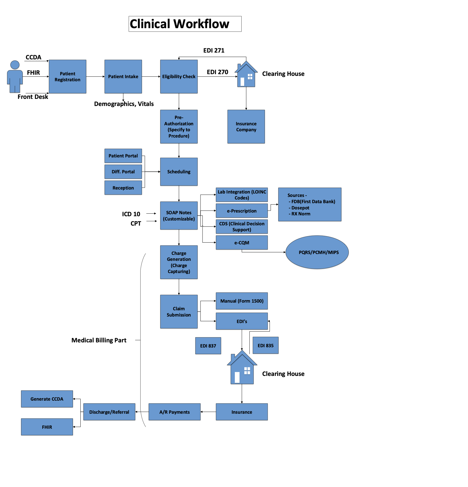
This diagram shows the complete flow from Patient Registration through A/R Payments, including all EDI transactions (270/271, 837, 835), coding systems (ICD-10, CPT, LOINC), and interoperability standards (CCDA, FHIR).
1 Patient Registration & Intake (Front Desk)
What happens: New patient arrives, front desk collects demographics (name, DOB, address, insurance info). Nurse takes vitals (BP, temp, weight). If patient has records elsewhere, import via CCDA or FHIR.
How CCDA/FHIR Import Actually Works
Any healthcare entity that has treated the patient and maintains electronic records:
| Provider Type | Examples | Common EHR Systems |
|---|---|---|
| Primary Care Physicians (PCP) | Family medicine, Internal medicine, Pediatricians | Epic, Cerner, Athenahealth, eClinicalWorks |
| Specialists | Cardiologists, Endocrinologists, Neurologists, Oncologists | Epic, Cerner, Allscripts, NextGen |
| Hospitals/Health Systems | Kaiser Permanente, Mayo Clinic, Cleveland Clinic, HCA Healthcare | Epic (most common), Cerner, Meditech |
| Urgent Care Centers | CityMD, MedExpress, GoHealth, Concentra | Practice Fusion, DrChrono, eClinicalWorks |
| Labs/Diagnostic Centers | Quest Diagnostics, LabCorp, BioReference | Sunquest, Cerner PathNet, Orchard |
| Pharmacies | CVS, Walgreens, Rite Aid (for medication history) | Surescripts network |
| Behavioral Health | Psychiatrists, Psychologists, Counselors, Rehab facilities | SimplePractice, TherapyNotes, Valant |
| Skilled Nursing/Long-term Care | Nursing homes, Assisted living, Home health agencies | PointClickCare, MatrixCare, Netsmart |
| Health Information Exchanges (HIEs) | CommonWell, Carequality, State HIEs (e.g., CRISP in Maryland) | Aggregated data from multiple providers |
- Patient requests records from previous provider (or signs HIPAA release form at new provider's office)
- Previous provider's EHR generates CCDA XML document containing:
- Problems/Diagnoses (ICD-10 coded)
- Medications (RxNorm coded)
- Allergies (SNOMED coded)
- Procedures, Immunizations, Lab Results
- Care Plan, Vital Signs
- Document is transmitted via Direct Secure Messaging (healthcare email) or Health Information Exchange (HIE)
- Receiving EHR parses the XML, maps coded data to internal structures
- Clinical staff reviews imported data before reconciling into patient chart
- Reconciliation creates audit trail showing imported vs. manually entered data
- Patient authenticates via OAuth 2.0 (often through patient portal login like MyChart)
- System makes REST API calls to previous provider's FHIR server
- Data returned as JSON/XML resources with standardized coding
- Receiving system transforms FHIR resources into internal data model
- Can be real-time (on-demand) or batch (scheduled sync)
| FHIR Endpoint | What It Returns | Example Data |
|---|---|---|
GET /Patient/[id] |
Demographics | Name, DOB, Gender, Address, Phone, MRN, SSN (last 4) |
GET /Condition?patient=[id] |
Diagnoses/Problems | ICD-10: E11.9 (Type 2 Diabetes), onset date, status (active/resolved) |
GET /MedicationRequest?patient=[id] |
Medications | Metformin 500mg, 2x daily, prescriber, pharmacy, refills remaining |
GET /AllergyIntolerance?patient=[id] |
Allergies | Penicillin - reaction: rash, severity: moderate, verified date |
GET /Observation?category=vital-signs |
Vital Signs | BP: 145/92 mmHg, HR: 78 bpm, Weight: 185 lbs, Date: 2026-01-15 |
GET /Observation?category=laboratory |
Lab Results | HbA1c: 7.2% (LOINC: 4548-4), Glucose: 126 mg/dL, Reference range |
GET /Immunization?patient=[id] |
Vaccinations | COVID-19 Pfizer, Lot#, Admin date, Site (left arm), Manufacturer |
GET /Procedure?patient=[id] |
Procedures | Colonoscopy (CPT 45378), Date: 2024-06-10, Findings, Performer |
GET /DocumentReference?patient=[id] |
Clinical Documents | Discharge summary, Radiology report, Pathology report (as PDF/CCDA) |
GET /CarePlan?patient=[id] |
Care Plans | Diabetes management plan, Goals, Interventions, Care team members |
21st Century Cures Act Requirement: Since 2024, all certified EHRs must support FHIR R4 APIs for patient access. This means patients can use apps to pull their records from any provider.
2 Insurance Verification (Eligibility Check)
What happens: System sends EDI 270 (eligibility inquiry) through clearing house to insurance. Insurance responds with EDI 271 (eligibility response) confirming coverage, deductibles, copays.
Insurance Verification: Complete EDI 270/271 Workflow
- Claims denied for inactive coverage
- Wrong copay collected at time of service
- Services performed without authorization
- Bad debt from uninsured patients
- Revenue cycle delays
- Know coverage status before service
- Collect accurate copay/coinsurance
- Identify prior auth requirements upfront
- Reduce claim denials by 10-15%
- Improved patient financial counseling
- Appointment scheduling (batch check for next day's patients)
- Patient check-in (real-time verification)
- Pre-registration (online or phone)
- Before expensive procedures (same-day verification)
- Patient demographics (name, DOB, address)
- Subscriber ID (insurance member number)
- Payer ID (unique identifier for insurance company)
- Provider NPI (National Provider Identifier)
- Service type code (what kind of service being checked)
- Date of service (when service will be performed)
ISA*00* *00* *ZZ*SUBMITTER_ID *ZZ*PAYER_ID *240115*1023*^*00501*000000001*0*P*:~ GS*HS*SUBMITTER*PAYER*20240115*1023*1*X*005010X279A1~ ST*270*0001*005010X279A1~ BHT*0022*13*ABC123*20240115*1023~ ← Transaction ID, date/time HL*1**20*1~ ← Hierarchical Level: Information Source NM1*PR*2*BLUE CROSS*****PI*12345~ ← Payer Name: Blue Cross, Payer ID: 12345 HL*2*1*21*1~ ← Hierarchical Level: Information Receiver NM1*1P*2*MERCY MEDICAL CENTER*****XX*1234567890~ ← Provider: Mercy, NPI: 1234567890 HL*3*2*22*0~ ← Hierarchical Level: Subscriber NM1*IL*1*SMITH*JOHN****MI*ABC123456789~ ← Patient: John Smith, Member ID: ABC123456789 DMG*D8*19800315*M~ ← DOB: March 15, 1980, Gender: Male DTP*291*D8*20240120~ ← Service Date: Jan 20, 2024 EQ*30~ ← Service Type: 30 = Health Benefit Plan Coverage SE*13*0001~ GE*1*1~ IEA*1*000000001~
| Data Element | Segment Code | Example Value | What It Means |
|---|---|---|---|
| Coverage Status | EB*1 / EB*6 | 1 = Active, 6 = Inactive | Is the patient currently covered by this plan? |
| Plan Type | EB*...*HM/PR/POS | HM = HMO, PR = PPO, POS = Point of Service | Type of insurance plan (affects network rules) |
| Effective Dates | DTP*346/347 | 20240101 - 20241231 | When coverage began and ends |
| Copay Amount | EB*B*...*30.00 | $30.00 | Fixed amount patient pays per visit |
| Deductible (Individual) | EB*C*IND*...*1500.00 | $1,500 total, $400 remaining | Amount patient pays before insurance kicks in |
| Coinsurance | EB*A*...*20 | 20% | Patient's share after deductible (insurance pays 80%) |
| Out-of-Pocket Max | EB*G*...*6000.00 | $6,000 | Maximum patient pays in a year (then insurance pays 100%) |
| In-Network vs Out | EB*...*IN/OUT | Different rates for each | Higher costs for out-of-network providers |
| Prior Auth Required | EB*...*Y | Y = Yes, N = No | Need pre-approval before performing service |
| Referral Required | EB*...*Y | Y = Yes (HMO plans) | Need PCP referral to see specialist |
| Code | Service Type | When to Use |
|---|---|---|
30 | Health Benefit Plan Coverage | General eligibility check (most common) |
1 | Medical Care | Office visits, general medical services |
3 | Consultation | Specialist consultations |
4 | Diagnostic X-Ray | Radiology services |
5 | Diagnostic Lab | Laboratory tests |
48 | Hospital Inpatient | Hospital admission |
50 | Hospital Outpatient | Outpatient procedures |
86 | Emergency Services | ER visits |
88 | Pharmacy | Prescription drug coverage |
MH | Mental Health | Behavioral health services |
| Clearing House | Market Position | Key Features |
|---|---|---|
| Change Healthcare | Largest - processes 15B+ transactions/year | Real-time eligibility, claims, ERA/EOB, analytics |
| Availity | Major player, payer-owned consortium | Multi-payer portal, free for basic services |
| Trizetto (Cognizant) | Enterprise-focused | Revenue cycle management, practice management |
| Waystar | Growing mid-market | AI-powered denial prediction, patient estimation |
| Office Ally | Free option for small practices | Basic claims, eligibility - no fees for standard services |
3 Pre-Authorization (If Required)
What happens: For certain procedures (surgeries, expensive tests), need prior approval from insurance. Provider submits clinical justification, insurance reviews and issues auth number if approved.
Prior Authorization: Complete Workflow & Integration
Prior authorization (PA) is a utilization management tool that requires providers to get approval before performing certain services. Insurance uses it to control costs and ensure medical necessity.
- Average 35+ hours/week on PA per practice
- 34% of physicians report patient harm from delays
- Denial rate ~10-15% initially
- High administrative burden
- Reduce PA time from days to minutes
- Auto-populate clinical data from EHR
- Real-time approval for simple cases
- Track status without phone calls
| Category | Examples | Why PA Required |
|---|---|---|
| High-Cost Imaging | MRI, CT scan, PET scan, nuclear medicine | Expensive tests with alternatives (X-ray, ultrasound first) |
| Specialty Medications | Biologics, oncology drugs, specialty pharmacy | $10,000+/month drugs, step therapy requirements |
| Elective Surgery | Joint replacement, bariatric surgery, spine surgery | Conservative treatment first, ensure medical necessity |
| DME (Durable Medical Equipment) | CPAP, wheelchairs, prosthetics, hospital beds | Verify diagnosis, appropriate equipment selection |
| Behavioral Health | Inpatient psychiatric, residential treatment, intensive outpatient | Level of care determination, medical necessity |
| Physical/Occupational Therapy | PT/OT after initial evaluation (varies by payer) | Continuation beyond initial visits, functional improvement |
| Genetic Testing | BRCA testing, pharmacogenomics, whole exome sequencing | Clinical utility criteria, appropriate candidates |
- Patient demographics and insurance info
- Diagnosis codes (ICD-10) supporting medical necessity
- Previous treatments tried and failed (step therapy)
- Relevant lab results, imaging reports
- Clinical notes supporting the request
- Electronic PA (ePA): NCPDP SCRIPT for medications, X12 278 for medical services
- Payer Portal: Manual entry on payer website (CoverMyMeds, Availity)
- Phone/Fax: Legacy method, still common (30% of requests)
- Auto-Approval: Simple cases meeting criteria approved instantly
- Clinical Review: Nurse reviewer evaluates medical necessity
- Physician Review: Complex cases escalated to payer's medical director
- Request for Information: Additional documentation needed
- Approved: Auth number issued (must be included on claim)
- Denied: Reason provided, appeal rights explained
- Pending: Additional info needed, partial approval
- Modified: Alternative service approved instead
| Transaction | Direction | Purpose | Key Data |
|---|---|---|---|
| 278 Request | Provider → Payer | Submit PA request for medical service | Patient info, diagnosis, procedure codes, clinical justification |
| 278 Response | Payer → Provider | Return PA decision | Approved/Denied, auth number, valid dates, units approved |
| 278 Inquiry | Provider → Payer | Check status of pending PA | Reference to original request |
| Field | Example | Why It Matters |
|---|---|---|
| Authorization Number | AUTH2024012345 | Required on claim - no auth number = denial |
| Effective Dates | 01/15/2024 - 04/15/2024 | Service must occur within this window |
| Units/Visits Approved | 12 PT visits, 1 surgery | Cannot exceed without re-authorization |
| Specific CPT Codes | 27447 (TKA) | Only approved procedure covered |
| Approved Provider/Facility | NPI 1234567890 at XYZ Hospital | May be facility-specific authorization |
| Diagnosis Codes | M17.11 (Primary OA, right knee) | Claim diagnosis must match auth |
4 Scheduling & Portal Access
What happens: Patient books appointment via portal or phone. System manages provider calendars, room availability, and appointment types (new patient, follow-up, procedure).
Scheduling System: Complete Practice Management Integration
| Component | Function | Key Features |
|---|---|---|
| Provider Schedule | Manage each provider's availability | Working hours, blocked time, vacation, on-call rotation |
| Resource Calendar | Track rooms, equipment availability | Exam rooms, procedure suites, imaging equipment |
| Appointment Types | Define visit categories with rules | Duration, required resources, prep time, overlap rules |
| Scheduling Rules Engine | Enforce business logic | New patient slots, double-booking limits, buffer time |
| Waitlist Management | Handle cancellations efficiently | Auto-notify waitlisted patients, priority ranking |
| Appointment Type | Typical Duration | Scheduling Rules | Pre-Visit Requirements |
|---|---|---|---|
| New Patient Visit | 30-60 min | Specific slots, limited per day, needs extra time | Registration forms, insurance cards, medical records request |
| Established Follow-up | 15-20 min | Standard slots, can double-book in some practices | Update insurance, collect copay |
| Annual Physical/Wellness | 30-45 min | Morning slots preferred (fasting labs) | Pre-visit questionnaire, lab orders sent ahead |
| Procedure Visit | Variable (15 min - 2 hrs) | Specific room required, staff assigned | Consent forms, NPO instructions, driver arranged |
| Telehealth Visit | 15-30 min | No room needed, can overlap with in-person | Tech check, video link sent, e-consent |
| Same-Day/Urgent | 15-20 min | Reserved slots, nurse triage first | Brief screening, symptom assessment |
| Nurse-Only Visit | 10-15 min | For injections, BP checks, wound care | Standing orders required |
- Provider's working hours and blocked time
- Appointment type duration requirements
- Resource availability (rooms, equipment)
- Scheduling rules (new patient limits, buffer time)
- Instant email/SMS confirmation
- Calendar invite (.ics file)
- Automated reminders (7 days, 2 days, 1 day, 2 hours before)
- Pre-visit instructions (fasting, bring list, arrive early)
| Check-In Method | Process | Data Captured |
|---|---|---|
| Front Desk (Traditional) | Patient arrives, staff looks up appointment, verifies info | Photo ID, insurance card scan, copay collection, consent signatures |
| Kiosk Check-In | Patient uses touchscreen kiosk in lobby | DOB verification, update demographics, sign consents, pay copay |
| Mobile Check-In | Patient completes check-in on phone before arriving | All pre-registration done, just arrival notification at office |
| Curbside (Post-COVID) | Patient texts when in parking lot, called when room ready | Minimizes waiting room time, symptom screening |
- View test results (with release rules)
- Message provider (secure messaging)
- Request prescription refills
- View immunization records
- Access visit summaries (AVS)
- Download health records (CCDA)
- Update demographics/insurance
- View/pay bills online
- Request medical records
- Complete forms/questionnaires
- Manage family member access (proxy)
- Set communication preferences
MIPS Requirement: Patient portal with view/download/transmit capability is required for Promoting Interoperability measures. 21st Century Cures Act requires information blocking prevention.
5 Clinical Encounter (The Visit)
What happens: Provider documents visit using SOAP format. Assigns ICD-10 diagnosis codes and CPT procedure codes. Orders labs (LOINC coded), prescribes meds (e-Rx), and CDS system provides clinical alerts.
SOAP Notes: Complete Documentation System
| Section | What It Contains | Example Content | Data Capture Method |
|---|---|---|---|
| Subjective | Patient's own description of symptoms, concerns, history. What they tell you. | "Patient reports chest pain for 2 days, worse with exertion. Denies shortness of breath. Pain radiates to left arm. Rates pain 6/10." | Free text, structured questionnaires, patient intake forms, voice dictation |
| Objective | Measurable, observable findings. What provider examines/measures. | "BP: 145/92, HR: 88, Temp: 98.6°F. Lungs clear. Heart: regular rhythm, no murmurs. ECG shows ST elevation in leads V1-V4." | Vital signs integration, physical exam templates, lab results auto-populate, imaging links |
| Assessment | Provider's clinical judgment, diagnosis. Links to ICD-10 codes. | "1. Acute STEMI (I21.0) - primary. 2. Essential hypertension (I10) - stable. 3. Type 2 DM (E11.9) - controlled." | ICD-10 code picker, problem list integration, diagnosis search with synonyms |
| Plan | Treatment plan, orders, referrals, follow-up. Drives billing codes (CPT). | "1. Admit to cardiac ICU. 2. Cardiology consult STAT. 3. Aspirin 325mg, Heparin drip. 4. Cardiac cath within 90 min. 5. Repeat ECG in 1 hr." | Order entry system, medication ordering, referral workflows, procedure scheduling |
Different visit types require different SOAP templates with pre-built sections:
| Visit Type | Template Sections | Typical CPT Range | Documentation Requirements |
|---|---|---|---|
| New Patient Visit | Full HPI, complete ROS (10+ systems), comprehensive exam, complete history | 99201-99205 | Must document all history elements, detailed exam, medical decision-making complexity |
| Established Patient | Focused HPI, relevant ROS, problem-focused exam | 99211-99215 | Less comprehensive than new patient, focuses on presenting problem |
| Annual Wellness Visit | Health risk assessment, screening schedule review, advance care planning | G0438/G0439 | Medicare-specific, no acute problems addressed, prevention-focused |
| Chronic Care Management | Care plan review, medication reconciliation, care coordination notes | 99490, 99491 | 20+ minutes non-face-to-face time, 2+ chronic conditions |
| Telehealth Visit | Same as in-person but with limited physical exam | 99211-99215 + modifier 95 | Must document synchronous audio-video, patient location, consent |
| Procedure Visit | Procedure note: indication, consent, technique, findings, complications | Procedure-specific CPT | Pre-procedure assessment, timeout documentation, post-procedure status |
Systematic questioning about each body system. Required for higher-level billing codes:
Billing Impact: 99214/99215 require 10+ systems reviewed. EHR templates with checkboxes help capture this efficiently.
| SOAP Element | Links To | System Integration |
|---|---|---|
| Assessment (Diagnosis) | ICD-10 codes → Required on claims | ICD-10 picker auto-suggests based on problem list; validates code specificity |
| Plan (Procedures done) | CPT codes → Line items on claim | Procedure order triggers charge capture; E/M level auto-calculated or selected |
| Time spent | Time-based billing (2021+ E/M) | Timer in EHR; 99214 = 30-39 min, 99215 = 40-54 min total time |
| Medical Decision Making (MDM) | Complexity level → E/M code selection | System analyzes # of diagnoses, data reviewed, risk level to suggest code |
Key Point: The documentation in SOAP notes justifies the billing codes. Insufficient documentation = downcoding or audit risk.
Lab Orders: Complete Order-to-Results Workflow
LOINC (Logical Observation Identifiers Names and Codes) is the universal standard for identifying lab tests:
| LOINC Code | Test Name | Component Parts | Common Use |
|---|---|---|---|
2345-7 |
Glucose [Mass/volume] in Serum/Plasma | Component: Glucose | Property: Mass | System: Serum | Scale: Quantitative | Fasting glucose, diabetes monitoring |
4548-4 |
Hemoglobin A1c/Total Hemoglobin | Component: HbA1c | Property: Mass fraction | System: Blood | Scale: Quantitative | Diabetes control (3-month average) |
2093-3 |
Cholesterol [Mass/volume] in Serum | Component: Cholesterol | Property: Mass | System: Serum | Scale: Quantitative | Lipid panel, cardiovascular risk |
6690-2 |
Leukocytes [#/volume] in Blood | Component: WBC | Property: Number | System: Blood | Scale: Quantitative | CBC - white blood cell count |
2160-0 |
Creatinine [Mass/volume] in Serum | Component: Creatinine | Property: Mass | System: Serum | Scale: Quantitative | Kidney function (eGFR calculation) |
1742-6 |
Alanine aminotransferase [U/volume] in Serum | Component: ALT | Property: Catalytic activity | System: Serum | Scale: Quantitative | Liver function panel |
Why LOINC Matters: Enables interoperability - when labs from Quest, LabCorp, and hospital labs all use the same LOINC code, results can be trended together in the patient's chart regardless of where the test was performed.
| Panel Name | Individual Tests Included | Clinical Use | Typical CPT |
|---|---|---|---|
| CBC with Differential | WBC, RBC, Hemoglobin, Hematocrit, Platelets, Neutrophils, Lymphocytes, Monocytes, Eosinophils, Basophils | Infection, anemia, blood disorders | 85025 |
| Basic Metabolic Panel (BMP) | Glucose, BUN, Creatinine, Sodium, Potassium, Chloride, CO2, Calcium | Kidney function, electrolytes, diabetes | 80048 |
| Comprehensive Metabolic Panel (CMP) | BMP + Albumin, Total Protein, ALP, ALT, AST, Bilirubin | Liver + kidney function, diabetes | 80053 |
| Lipid Panel | Total Cholesterol, HDL, LDL (calculated), Triglycerides | Cardiovascular risk assessment | 80061 |
| Thyroid Panel | TSH, Free T4, Free T3 (sometimes) | Thyroid disorders | 84443 + 84439 |
| Hepatic Function Panel | ALT, AST, ALP, Total/Direct Bilirubin, Albumin, Total Protein | Liver disease, medication monitoring | 80076 |
Results that require immediate notification to prevent patient harm:
| Test | Critical Low | Critical High | Required Action |
|---|---|---|---|
| Glucose | <50 mg/dL | >500 mg/dL | Immediate callback to provider |
| Potassium | <2.5 mEq/L | >6.5 mEq/L | Repeat and callback - cardiac risk |
| Hemoglobin | <7 g/dL | >20 g/dL | Transfusion consideration |
| Platelets | <20,000/μL | >1,000,000/μL | Bleeding/clotting risk |
| Troponin | N/A | >0.04 ng/mL (varies by assay) | Possible MI - STAT cardiology |
System Requirement: EHR must document: Time result available → Time provider notified → Provider name → Read-back confirmation. This is a Joint Commission/CAP accreditation requirement.
Clinical Decision Support (CDS): Alert Types & Rules Engine
Clinical Decision Support provides patient-specific, actionable recommendations to clinicians at the point of care. It analyzes patient data against clinical rules and evidence-based guidelines to improve safety and quality.
- Prevent medication errors
- Catch missed diagnoses
- Ensure guideline adherence
- Close care gaps
- Reduce unnecessary tests
- Too many alerts = ignored
- Override rates can reach 90%+
- Must tune for clinical relevance
- Tiered severity is critical
| Alert Type | Triggers When | Example | Severity |
|---|---|---|---|
| Drug-Drug Interaction | Two medications in patient's list have known interaction | "Warfarin + Aspirin: Increased bleeding risk. Consider alternative or monitor INR closely." | Hard stop / Warning / Info (based on severity class) |
| Drug-Allergy Alert | Prescribed med matches documented allergy | "Patient has documented Penicillin allergy. Amoxicillin is a penicillin-class antibiotic." | Hard stop (anaphylaxis) or Warning (rash history) |
| Dose Range Check | Prescribed dose outside normal range for age/weight/renal function | "Metformin 2500mg exceeds max daily dose (2000mg). Patient has eGFR 45 - contraindicated below 30." | Warning with max dose suggestion |
| Duplicate Therapy | Same drug class already prescribed | "Patient already on Lisinopril (ACE-I). Enalapril is also an ACE-I. Duplicate therapy detected." | Warning |
| Care Gap/Reminder | Preventive care overdue based on age/conditions | "Diabetic patient: HbA1c not done in 6 months. Last value 7.8%. Order recommended." | Info/Reminder |
| Diagnosis-Based Alert | Condition requires specific monitoring/treatment | "New CHF diagnosis: Consider ordering BNP, Echo if not done. Start ACE-I per guidelines." | Info with order suggestions |
| Formulary Alert | Prescribed drug not covered by patient's insurance | "Eliquis not on formulary for Blue Cross. Alternatives: Xarelto (Tier 2), Warfarin (Tier 1)." | Info with alternatives |
| Lab-Based Alert | Lab result triggers clinical action | "K+ = 6.2 mEq/L (Critical High). Repeat and consider: stop K+ supplements, ECG, kayexalate." | Critical - requires acknowledgment |
CDS uses IF-THEN rules evaluated against patient data in real-time:
// Example: Drug-Drug Interaction Rule
RULE "Warfarin-NSAID-Interaction"
WHEN
patient.activeMedications CONTAINS drug WHERE drug.class = "Anticoagulant-Warfarin"
AND
orderEntry.newMedication.class = "NSAID"
THEN
ALERT {
severity: "HIGH",
type: "Drug-Drug Interaction",
message: "Warfarin + NSAID increases bleeding risk by 3-6x",
recommendations: [
"Consider acetaminophen for pain",
"If NSAID required, use lowest dose for shortest duration",
"Monitor INR more frequently"
],
requiresOverrideReason: true,
evidenceLink: "https://www.ncbi.nlm.nih.gov/..."
}
END
// Example: Care Gap Rule
RULE "Diabetic-Eye-Exam-Due"
WHEN
patient.problemList CONTAINS diagnosis WHERE diagnosis.icd10 IN ("E11.*", "E10.*")
AND
patient.lastDilatedEyeExam IS NULL OR
patient.lastDilatedEyeExam.date < (TODAY - 365 days)
THEN
ALERT {
severity: "INFO",
type: "Care Gap",
message: "Diabetic retinopathy screening overdue",
recommendations: ["Order ophthalmology referral"],
smartAction: {
type: "ORDER_REFERRAL",
specialty: "Ophthalmology",
reason: "Annual diabetic eye exam"
}
}
END
| Source | What It Provides | Integration |
|---|---|---|
| First DataBank (FDB) | Drug-drug interactions, dose checking, allergy cross-references, IV compatibility | Licensed database, updated monthly, API integration |
| Medi-Span | Similar to FDB - drug information, interactions, dosing | Alternative to FDB, common in smaller EHRs |
| Clinical Guidelines (USPSTF, AHA, ADA) | Preventive care recommendations, chronic disease management protocols | Encoded as rules, updated annually |
| Local Institution Rules | Hospital-specific protocols, order sets, formulary restrictions | Custom rules maintained by clinical informatics team |
| CDS Hooks (HL7 Standard) | External CDS services called at specific workflow points | REST API calls to external CDS servers (e.g., Cerner, Epic) |
| Workflow Point | CDS Hook | Alerts Fired |
|---|---|---|
| Patient chart opened | patient-view |
Care gaps, overdue screenings, pending results to review |
| Order entry started | order-select |
Formulary check, prior auth required, duplicate orders |
| Medication prescribed | order-sign |
Drug interactions, allergy, dose check, renal adjustment |
| Diagnosis entered | diagnosis-added |
Condition-specific order sets, guidelines, specialist referral suggestions |
| Lab result received | result-received |
Critical value alerts, trending alerts, action recommendations |
| Encounter closing | encounter-close |
Missing documentation, unsigned orders, quality measure gaps |
e-Prescription (e-Rx): Complete Prescribing Workflow
Surescripts is the national network connecting prescribers to pharmacies. Think of it as the "Visa network" for prescriptions.
| Surescripts Service | What It Does | Data Exchanged |
|---|---|---|
| E-Prescribing | Send new Rx, renewals, cancellations to pharmacy | NCPDP SCRIPT NewRx, RxRenewal, CancelRx messages |
| Medication History | Pull patient's fill history from all pharmacies | Last 12 months of dispensed medications, dates, pharmacies |
| Formulary & Benefits (F&B) | Real-time insurance coverage check | Drug coverage status, tier, copay, alternatives, prior auth flag |
| Real-Time Prescription Benefit (RTPB) | Patient-specific cost at point of prescribing | Actual out-of-pocket cost, lower-cost alternatives ranked |
| PDMP Integration | Check state prescription drug monitoring program | Controlled substance history (to detect doctor shopping) |
| Specialty Enrollment | Enroll patients in specialty pharmacy programs | Patient consent, insurance info, clinical data for specialty meds |
Schedule II-V controlled substances (opioids, benzodiazepines, stimulants) require additional security per DEA regulations:
| Requirement | What It Means | Implementation |
|---|---|---|
| Identity Proofing | Prescriber must be verified to NIST IAL2 standard | In-person verification with government ID, or remote via credential service provider |
| Two-Factor Authentication | Something you know + something you have/are | Password + hardware token (e.g., ID.me, Exostar), or biometric (fingerprint) |
| Logical Access Controls | Only authorized prescribers can sign controlled Rx | DEA number validation, state license check, role-based permissions |
| Audit Trail | Every EPCS action must be logged | Timestamp, user, action, prescription details - retained for 2+ years |
| Third-Party Audit | EHR/pharmacy system must be certified | Annual audit by DEA-approved certification body |
Mandatory EPCS: As of 2021, EPCS is required for Medicare Part D prescriptions. Many states have additional mandates.
| Message Type | Direction | Purpose | Contains |
|---|---|---|---|
NewRx |
Prescriber → Pharmacy | New prescription | Patient, prescriber, drug, sig, quantity, refills, pharmacy |
RxRenewalRequest |
Pharmacy → Prescriber | Request to renew Rx (patient at pharmacy) | Original Rx info, patient request |
RxRenewalResponse |
Prescriber → Pharmacy | Approve/deny/modify renewal | Approved (with changes) or denied with reason |
CancelRx |
Prescriber → Pharmacy | Cancel unfilled prescription | Original Rx reference, cancellation reason |
RxChangeRequest |
Pharmacy → Prescriber | Request therapeutic substitution | Original Rx, suggested alternative, reason (formulary, out of stock) |
RxFill |
Pharmacy → Prescriber | Notification that Rx was dispensed | Fill date, quantity dispensed, refills remaining |
Status |
Bidirectional | Acknowledgment or error | Success/failure status, error codes if applicable |
Process of comparing patient's current medication list against new orders at transitions of care:
| Transition Point | Med Rec Action | System Support |
|---|---|---|
| Admission | Capture home medications, compare to admission orders | Pull Surescripts history, pharmacy fills, patient interview |
| Transfer | Compare current orders to receiving unit formulary | Auto-suggest substitutions, flag discontinuations |
| Discharge | Reconcile inpatient meds to discharge prescriptions | Side-by-side comparison, continue/stop/change workflow |
| Office Visit | Review and update medication list | Mark as "taking", "not taking", "discontinued", add new |
Quality Measure: Accurate med rec at discharge is a Joint Commission NPSG and CMS quality measure. EHR must track completion status.
e-CQM: Electronic Clinical Quality Measures
Electronic Clinical Quality Measures are standardized metrics calculated from EHR data to assess healthcare quality. They measure whether patients received recommended care (e.g., did diabetic patients get their HbA1c tested?).
- MIPS scoring affects Medicare payment (+/- 9%)
- Value-based contracts tied to quality
- Public reporting (Hospital Compare)
- Accreditation requirements (NCQA, Joint Commission)
- CMS (Medicare/Medicaid)
- Commercial payers
- ACOs and health systems
- State Medicaid programs
Every e-CQM has this structure - performance = numerator / denominator:
| Component | Definition | Example (CMS122 - Diabetes HbA1c Control) |
|---|---|---|
| Initial Population | All patients who could potentially be measured | Patients 18-75 with diabetes diagnosis (E11.x) and an encounter during measurement period |
| Denominator | Subset of initial population eligible for the measure | Same as initial population (all diabetics 18-75 seen this year) |
| Denominator Exclusions | Patients removed for valid clinical reasons | Patients in hospice, palliative care, or with limited life expectancy |
| Denominator Exceptions | Patients where action was attempted but not completed | Patient refused test, medical reason documented (e.g., terminal illness) |
| Numerator | Patients who met the quality criteria | Patients with most recent HbA1c <9% during measurement period |
(Numerator) / (Denominator - Exclusions - Exceptions) × 100 = Performance %
| CMS ID | Measure Name | What It Measures | Data Elements Needed |
|---|---|---|---|
| CMS122 | Diabetes: HbA1c Poor Control (>9%) | % of diabetics with HbA1c >9% (lower is better) | Diabetes diagnosis (ICD-10), HbA1c lab result (LOINC 4548-4) |
| CMS165 | Controlling High Blood Pressure | % of hypertensive patients with BP <140/90 | HTN diagnosis (I10), BP vital signs |
| CMS125 | Breast Cancer Screening | % of women 50-74 with mammogram in past 2 years | Gender, age, mammogram procedure code or imaging result |
| CMS130 | Colorectal Cancer Screening | % of patients 45-75 appropriately screened | Age, colonoscopy (CPT), FIT/FOBT (LOINC), Cologuard (LOINC) |
| CMS138 | Tobacco Use Screening & Cessation | % screened for tobacco use + cessation offered if positive | Smoking status, cessation counseling CPT (99406/99407) |
| CMS156 | High-Risk Medication Use in Elderly | % of 65+ NOT prescribed high-risk meds (Beers list) | Age, medication list, high-risk drug codes |
| CMS347 | Statin Therapy for CV Disease | % of ASCVD patients on statin therapy | CVD diagnosis, statin prescription (RxNorm) |
| Data Type | EHR Capture Point | Coding Standard | Example |
|---|---|---|---|
| Diagnoses | Problem list, encounter diagnosis | ICD-10-CM | E11.9 added to problem list during visit |
| Procedures | Procedure orders, charge capture | CPT, HCPCS | 45378 (colonoscopy) ordered and completed |
| Lab Results | Lab interface, manual entry | LOINC | 4548-4 (HbA1c) = 7.2% received from Quest |
| Medications | e-Prescribing, medication reconciliation | RxNorm | Atorvastatin 40mg prescribed (RxCUI 617310) |
| Vital Signs | Nursing intake, device integration | LOINC/UCUM | BP 138/88 mmHg captured at check-in |
| Social/Behavioral | Structured fields, questionnaires | SNOMED CT, LOINC | Smoking status = "Current smoker" (SNOMED 449868002) |
| Patient Refusal | Order entry (reason for not ordering) | SNOMED CT | "Patient refused" documented as exception |
- Data Extraction: EHR generates QRDA (Quality Reporting Document Architecture) files
- QRDA Category I: Patient-level data (one file per patient) - for audit purposes
- QRDA Category III: Aggregate data (summary counts) - for CMS submission
- Validation: Files validated against CMS measure specifications (value sets, logic)
- Submission: Upload to CMS Quality Payment Program portal or via qualified registry
- Feedback: CMS provides performance feedback, benchmark comparisons
- Payment Adjustment: MIPS score determines positive/negative payment adjustment for following year
Submission Deadline: Typically March 31 for prior calendar year performance. Late submissions subject to penalties.
6 Drug & Lab Data Sources
What happens: These are drug databases integrated into EHR for drug-drug interactions, dosing guidance, allergy checking, and standardized medication naming.
Drug Knowledge Bases & Lab Reference Data
EHRs don't contain drug knowledge themselves - they integrate with commercial drug databases that provide clinical decision support data. These databases are updated frequently (weekly/monthly) to reflect new drugs, safety alerts, and clinical guidelines.
| Database | Provider | Key Features | Common EHR Integration |
|---|---|---|---|
| First DataBank (FDB) | Hearst Health | Drug-drug interactions, allergy cross-reference, dosing, IV compatibility, drug images | Epic, Cerner, Meditech, NextGen |
| Medi-Span | Wolters Kluwer | Drug interactions, therapeutic duplicates, dose checking, drug-disease contraindications | Allscripts, eClinicalWorks, athenahealth |
| Micromedex | IBM Watson Health | Drug monographs, toxicology, drug identification, patient education content | Reference tool (less direct EHR integration) |
| Lexicomp | Wolters Kluwer | Drug information, interactions, patient handouts, pediatric/geriatric dosing | Epic (common add-on), reference tool |
| Clinical Pharmacology | Elsevier | Drug interactions, IV compatibility, herbal/supplement interactions | Various - often as reference |
| Feature | What It Does | Clinical Example |
|---|---|---|
| Drug-Drug Interactions | Alerts when two medications interact | Warfarin + NSAIDs = increased bleeding risk (Major interaction) |
| Drug-Allergy Checking | Cross-references allergies with drug classes | Penicillin allergy → alert when ordering Amoxicillin (same class) |
| Dose Range Checking | Validates dose is within safe limits | Metformin 3000mg/day exceeds max (2550mg) - alert |
| Renal/Hepatic Dosing | Adjusts dose for organ impairment | eGFR 30 = reduce metformin dose, avoid if <30 |
| Pediatric Dosing | Weight-based dosing calculations | Amoxicillin 25mg/kg/day for 20kg child = 500mg/day |
| Pregnancy/Lactation | Safety ratings for pregnant/nursing women | Category X drugs (contraindicated) trigger hard stop |
| Therapeutic Duplicates | Alerts for same drug class | Patient on Lisinopril, ordering Enalapril = duplicate ACE-I |
| Drug-Disease Contraindications | Flags drugs unsafe for patient's conditions | NSAIDs contraindicated in heart failure patient |
| IV Compatibility | Which drugs can be mixed/infused together | Don't mix ampicillin + gentamicin in same IV line |
| Standard | Maintained By | Purpose | Example |
|---|---|---|---|
| RxNorm | NLM (National Library of Medicine) | Normalized drug names - links different systems | RxCUI 197361 = Metformin 500mg tablet |
| NDC (National Drug Code) | FDA | Specific packaged product identifier | 0591-0405-01 = Watson Metformin 500mg, 100ct bottle |
| GPI (Generic Product Identifier) | Medi-Span | Hierarchical drug classification (14 digits) | 27200020000120 = Oral Antidiabetic → Biguanides → Metformin |
| GCN (Generic Code Number) | First DataBank | Groups therapeutically equivalent drugs | All metformin 500mg tablets share same GCN |
| SNOMED CT | IHTSDO | Clinical terminology including medications | Metformin (substance) SCTID: 109081006 |
| Data Source | Purpose | Integration Point |
|---|---|---|
| LOINC (Lab Test Codes) | Universal identifiers for lab tests | Lab ordering, results mapping, interoperability |
| Reference Ranges | Normal values by age, sex, units | Abnormal flagging (H/L/Critical) |
| Lab Compendium | Test catalog from reference labs (Quest, LabCorp) | Orderable test list, specimen requirements |
| UCUM (Units) | Standardized units of measure | mg/dL, mmol/L conversion, consistent reporting |
7 Quality Reporting (PQRS/PCMH/MIPS)
What happens: CMS requires quality measure reporting. MIPS affects Medicare reimbursement rates. EHR captures quality data during visits and submits electronically (e-CQM).
MIPS & Quality Reporting: How It Affects Reimbursement
MIPS (Merit-based Incentive Payment System) is CMS's program that adjusts Medicare payments based on provider performance. Good performers get bonuses; poor performers get penalties.
-9%
Payment penalty
0%
No adjustment
+9%
Payment bonus
| Category | Weight | What It Measures | How EHR Captures |
|---|---|---|---|
| Quality | 30% | Clinical quality measures (e-CQMs) - did patients receive recommended care? | Diagnoses, lab results, procedures, medications tracked per measure specs |
| Promoting Interoperability | 25% | Meaningful use of EHR - e-prescribing, health info exchange, patient access | e-Rx %, CCDA sent/received, patient portal engagement |
| Improvement Activities | 15% | Practice improvement - care coordination, patient safety, population health | Attestation to activities performed (less EHR-dependent) |
| Cost | 30% | Total cost of care attributed to provider | Calculated by CMS from claims data (not EHR-reported) |
| Measure | What It Requires | Target | EHR Tracking |
|---|---|---|---|
| e-Prescribing | % of prescriptions sent electronically (excluding controlled) | >70% | Count Surescripts e-Rx / Total Rx |
| PDMP Query | % of Schedule II prescriptions with PDMP check | >70% | PDMP integration query logs |
| Health Info Exchange - Send | % of transitions with CCDA sent | >50% | CCDA transmissions via Direct/HIE |
| Health Info Exchange - Receive | Incorporated external data into care | >50% | CCDA imports reconciled |
| Patient Access | % patients provided electronic access within 4 days | >80% | Portal activation, results release timing |
| Security Risk Analysis | Annual security risk assessment conducted | Yes/No | Attestation (not EHR-tracked) |
| Program | Years | Status | Key Points |
|---|---|---|---|
| Meaningful Use (MU) | 2011-2016 | Deprecated | Incentivized EHR adoption. Stage 1/2/3. Now part of MIPS. |
| PQRS | 2007-2016 | Deprecated | Physician Quality Reporting System. Consolidated into MIPS. |
| MIPS | 2017-Present | Current | Consolidated program. Mandatory for eligible clinicians. |
| APMs (Alternative Payment Models) | 2017-Present | Current | ACOs, bundled payments. Exempt from MIPS if "Advanced APM". |
| PCMH | 2008-Present | Current | Patient-Centered Medical Home recognition (NCQA). Bonus points in MIPS. |
- ONC Certification: EHR must be ONC-certified to report MIPS data
- Structured Data Capture: Diagnoses (ICD-10), medications (RxNorm), labs (LOINC) must be coded
- Measure Calculation Engine: Built-in logic to calculate numerator/denominator per CMS specs
- QRDA Export: Generate QRDA I (patient-level) and QRDA III (aggregate) files
- Care Gap Dashboards: Real-time visibility into quality performance
- Provider Attestation: Workflow for providers to attest to improvement activities
Reporting Options: Submit via EHR (direct), Qualified Registry, or Qualified Clinical Data Registry (QCDR).
8 Charge Capture & Claim Submission
What happens: After visit, charges are captured based on CPT codes. Claims submitted either via paper (CMS-1500 form) or electronically (EDI 837) through clearing house to insurance.
Charge Capture & Claim Submission: Complete Revenue Cycle
Charge capture is the process of converting clinical services into billable charges. Every service performed must be captured with the correct CPT/HCPCS code to generate revenue.
- Missed charges = lost revenue (3-5% typical)
- Wrong codes = denials or audits
- Unbundling violations = fraud risk
- Delayed capture = cash flow issues
- Automated from clinical documentation
- Real-time coding suggestions
- Complete and accurate services captured
- Compliant with bundling rules
- ICD-10 codes: Diagnoses that justify services
- CPT codes: Procedures/services performed
- Modifiers: Additional info (bilateral, distinct procedure, etc.)
- Units: Quantity of services (e.g., 4 units PT)
- Required fields complete (patient info, provider NPI, dates)
- ICD-10 supports CPT (medical necessity)
- No bundling violations (CCI edits)
- Modifiers used correctly
- Prior auth number attached if required
Office visits use E/M codes based on time or Medical Decision Making (MDM) complexity:
| CPT Code | Visit Type | MDM Level | Time-Based (2021+) | Typical Use |
|---|---|---|---|---|
| 99212 | Established | Straightforward | 10-19 min | Simple follow-up, single problem |
| 99213 | Established | Low | 20-29 min | Most common - routine visit, 2-3 issues |
| 99214 | Established | Moderate | 30-39 min | Multiple chronic conditions, new symptoms |
| 99215 | Established | High | 40-54 min | Complex decision-making, high risk |
| 99203 | New Patient | Low | 30-44 min | New patient, straightforward issues |
| 99204 | New Patient | Moderate | 45-59 min | New patient, multiple conditions |
| 99205 | New Patient | High | 60-74 min | New patient, complex case |
2021 E/M Changes: History and exam no longer determine code level. Now based on total time (face-to-face + charting + coordination) OR MDM complexity.
| Loop/Segment | Contains | Example Data |
|---|---|---|
| Loop 2010AA | Billing Provider | Practice name, NPI, tax ID, address |
| Loop 2010BB | Payer | Insurance company name, payer ID |
| Loop 2000B | Subscriber | Member ID, group number, relationship to patient |
| Loop 2010CA | Patient | Name, DOB, address (if different from subscriber) |
| Loop 2300 | Claim Header | Total charge, place of service, auth number, admission dates |
| Loop 2310 | Rendering Provider | Individual physician NPI who performed service |
| Loop 2400 | Service Lines | CPT code, modifiers, units, charge, ICD-10 pointers, date of service |
Understanding the paper form helps understand EDI data elements:
| Box # | Field Name | Content |
|---|---|---|
| 1 | Insurance Type | Medicare, Medicaid, TRICARE, etc. |
| 1a | Insured's ID Number | Member ID from insurance card |
| 2 | Patient Name | Last, First, MI |
| 3 | Patient DOB & Sex | MM/DD/YYYY, M/F |
| 21 | Diagnosis Codes | ICD-10 codes (up to 12) |
| 23 | Prior Authorization | Auth number if required |
| 24A | Date of Service | From/To dates |
| 24B | Place of Service | 11=Office, 21=Inpatient, 22=Outpatient, etc. |
| 24D | Procedures/Services | CPT/HCPCS codes with modifiers |
| 24E | Diagnosis Pointer | Links to Box 21 (A, B, C, D...) |
| 24F | Charges | $ amount for each line |
| 24G | Units | Quantity of service |
| 28 | Total Charge | Sum of all line charges |
| 33 | Billing Provider | Name, address, NPI |
| Edit Type | What It Checks | Example Issue |
|---|---|---|
| CCI Edits (NCCI) | Bundling - codes that can't be billed together | Can't bill 99213 + 99214 same day (mutually exclusive) |
| MUE (Medically Unlikely Edits) | Maximum units per day | Can't bill 8 units of 99213 same patient same day |
| LCD/NCD | Coverage determinations - is service covered for diagnosis? | MRI brain not covered for routine headache without red flags |
| Gender/Age Edits | Service appropriate for patient demographics | Prostate exam can't be billed for female patient |
| Modifier Validation | Modifier used appropriately | Modifier 25 requires separate E/M documentation |
| Authorization Check | Auth number present when required | MRI claim without prior auth number will deny |
9 Payment & Accounts Receivable
What happens: Insurance sends payment with EDI 835 (remittance advice) explaining what was paid/denied. System posts to A/R, patient billed for copay/deductible, collections for unpaid balances.
Payment & A/R: Remittance Processing & Denial Management
When insurance processes a claim, they send back an EDI 835 (Electronic Remittance Advice) explaining exactly how the claim was adjudicated - what was paid, denied, adjusted, and why.
$500.00
What you charged
$350.00
Contract rate
$280.00
Insurance pays 80%
$150 written off (contractual adjustment) | $70 patient responsibility (20% coinsurance)
- Payment: Amount insurance paid
- Contractual Adjustment: Write-off (billed - allowed)
- Patient Responsibility: Copay, coinsurance, deductible
- Denials: Amount not paid with reason codes
| Segment | Content | Example |
|---|---|---|
| BPR | Financial Info - payment method, amount, date | EFT payment of $12,456.78 on 01/20/2024 |
| TRN | Check/EFT number | Check #1234567 or EFT trace #987654321 |
| CLP | Claim Payment Info - status, amounts | Claim status: paid, total charged, total paid |
| SVC | Service Payment Info - line level | CPT 99213: charged $150, paid $85 |
| CAS | Claim Adjustment Segments - reason codes | CO-45: Contractual write-off $65 |
| PLB | Provider Level Balance - adjustments | Recoupments, interest, previous overpayments |
| Group | Code | Meaning | Action |
|---|---|---|---|
| CO (Contractual) | 45 | Charges exceed fee schedule/maximum allowable | Write off - can't bill patient |
| PR (Patient Resp) | 1 | Deductible amount | Bill patient |
| PR | 2 | Coinsurance amount | Bill patient |
| PR | 3 | Copayment amount | Bill patient (should have collected at visit) |
| CO | 4 | Procedure code inconsistent with modifier | Correct and resubmit |
| CO | 16 | Claim lacks information (missing data) | Add missing info and resubmit |
| CO | 18 | Duplicate claim/service | Review - may be true duplicate or need modifier |
| CO | 50 | Non-covered service (not a plan benefit) | May bill patient if ABN signed |
| CO | 97 | Payment adjusted - already paid for this service | Review for duplicate billing |
| OA (Other Adj) | 23 | Payment adjusted - impact of prior payer adjudication | Secondary insurance adjustment |
| Denial Type | Common Causes | Resolution Action |
|---|---|---|
| Eligibility Denials | Patient not covered, wrong member ID, termed coverage | Verify current eligibility, correct info, resubmit or bill patient |
| Authorization Denials | No prior auth, expired auth, wrong auth number | Obtain retro-auth if possible, appeal with clinical documentation |
| Coding Denials | Invalid code, bundling issue, modifier missing | Correct coding and resubmit (corrected claim) |
| Medical Necessity | Diagnosis doesn't support service | Review documentation, add supporting diagnosis, appeal |
| Timely Filing | Claim submitted past deadline (90-365 days varies) | Limited options - prove timely submission or write off |
| Duplicate Claim | Same service billed twice | Verify not duplicate; if distinct service, add modifier and resubmit |
| Aging Bucket | Meaning | Expected % | Action |
|---|---|---|---|
| 0-30 days | Recent claims, normal processing time | 50-60% | Monitor, no action needed yet |
| 31-60 days | May have issues, should be paid by now | 20-25% | Follow up on pending claims |
| 61-90 days | Problem claims, needs attention | 10-15% | Active follow-up, appeals |
| 91-120 days | High risk of non-collection | <10% | Escalate, consider write-off |
| 120+ days | Likely bad debt | <5% | Collections or write-off |
- Days in A/R: Average days to collect (target: <40 days)
- Clean Claim Rate: % claims paid on first submission (target: >95%)
- Denial Rate: % claims denied (target: <5%)
- Net Collection Rate: Collections / Allowed Amount (target: >95%)
- Cost to Collect: Billing cost per $ collected (target: 3-5%)
After insurance pays, patient responsibility flows to patient billing:
- Statement Generation: System generates patient statement showing: services, insurance paid, adjustments, and balance due
- Statement Cycle: First statement sent, then follow-ups at 30, 60, 90 days
- Payment Options: Online portal, phone, mail, payment plans
- Collection Letters: Increasingly urgent messaging with each cycle
- External Collections: Balances 120+ days may go to collection agency (if over threshold, e.g., $50)
- Bad Debt Write-Off: After reasonable effort, balance written off as bad debt
10 Discharge & Interoperability
What happens: When patient leaves or gets referred, generate CCDA document or use FHIR API to share clinical summary with other providers for continuity of care.
Discharge, Referrals & Care Transitions
| Transition Type | Scenario | Documents Required | Timing |
|---|---|---|---|
| Hospital Discharge | Inpatient to home or post-acute facility | Discharge Summary, AVS, Med list, Follow-up instructions | Within 24-48 hours of discharge |
| ED to PCP | Emergency visit, follow up with primary care | ED Summary CCDA, Test results, Diagnosis | Same day or next business day |
| PCP to Specialist | Referral to specialist for evaluation | Referral note, Relevant history, Test results | Before specialist appointment |
| Specialist to PCP | Consult completed, return to PCP care | Consult note with recommendations | Within days of visit |
| To Post-Acute | Hospital to SNF, rehab, home health | Transfer CCDA, Orders, Care plan | Before transfer |
| Patient Transfer | Moving to different health system | Complete medical record summary | Upon patient request |
| Section | Content | CCDA Section |
|---|---|---|
| Admission Info | Admit date, reason for admission, admitting diagnosis | Encounters |
| Hospital Course | What happened during stay - treatments, procedures, complications | Hospital Course (narrative) |
| Discharge Diagnoses | Final diagnoses (ICD-10 coded) | Problem List |
| Procedures Performed | Surgeries, interventions during stay | Procedures |
| Discharge Medications | Complete med list - new, changed, discontinued | Medications |
| Follow-up Instructions | Appointments, activity restrictions, warning signs | Plan of Care |
| Pending Results | Labs/tests ordered but not resulted at discharge | Results (with pending status) |
| Patient Education | Disease-specific education materials provided | Instructions |
- Direct Secure Message: Encrypted healthcare email to specialist
- HIE (Health Info Exchange): Regional network routes to recipient
- Same-EHR: If specialist on same system, appears in their inbox
- Fax fallback: Still common if no electronic connection
| Method | How It Works | Pros | Cons |
|---|---|---|---|
| CCDA via Direct | XML document sent via encrypted email (Direct protocol) | Widely supported, structured data, works across EHRs | Document-based (point-in-time), manual workflow |
| FHIR API | REST API queries for specific data in real-time | Real-time, query specific data, modern architecture | Requires API integration, patient consent workflow |
| HIE Networks | Regional exchange aggregates data from participants | Community-wide data, break-the-glass access | Regional coverage varies, governance complexity |
| Carequality/CommonWell | National framework connecting HIEs and EHRs | National reach, EHR-to-EHR query | Opt-in participation, data quality varies |
| Document Type | When Generated | Key Sections |
|---|---|---|
| CCD (Continuity of Care Document) | Patient transfers, general summary | Problems, Meds, Allergies, Procedures, Results, Immunizations |
| Discharge Summary | Hospital discharge | Hospital Course, Discharge Meds, Instructions, Follow-up |
| Referral Note | Outpatient referral to specialist | Reason for Referral, History, Current Meds, Question for consult |
| Consultation Note | Specialist responds to referral | Assessment, Recommendations, Plan |
| Progress Note | Routine visit summary | SOAP note elements, Orders placed |
| Transfer Summary | Patient transfer to another facility | Current status, Active problems, Meds, Orders to continue |
See Phase 1 for detailed CCDA/FHIR technical implementation including API endpoints and data elements.
Key Interview Point
When asked "Explain healthcare workflow," walk through these 10 phases. Mention specific standards (ICD-10, CPT, EDI transactions) to show deep knowledge.
Healthcare Terminology Glossary
Clinical Coding Systems
ICD-10 (International Classification of Diseases, 10th Revision)
Diagnosis coding system. Every condition/disease has a unique code. Used worldwide, required for billing.
CPT (Current Procedural Terminology)
Procedure coding system owned by AMA. Codes for services performed (office visits, surgeries, tests).
LOINC (Logical Observation Identifiers Names and Codes)
Universal standard for lab tests and clinical observations. Enables lab result interoperability.
SNOMED CT
Comprehensive clinical terminology for documenting clinical information. More granular than ICD-10.
RxNorm
Standardized drug naming system by NIH. Normalizes drug names across different systems.
NDC (National Drug Code)
Unique 10-digit identifier for human drugs. Identifies manufacturer, product, package size.
EDI Transaction Types
| EDI Code | Name | Purpose | Direction |
|---|---|---|---|
EDI 270 |
Eligibility Inquiry | Ask insurance: "Is this patient covered?" | Provider → Payer |
EDI 271 |
Eligibility Response | Insurance responds with coverage details, copay, deductible | Payer → Provider |
EDI 837 |
Healthcare Claim | Submit claim for payment (like electronic CMS-1500) | Provider → Payer |
EDI 835 |
Remittance Advice | Payment explanation - what was paid, denied, and why | Payer → Provider |
EDI 276 |
Claim Status Inquiry | Ask "What's the status of my claim?" | Provider → Payer |
EDI 277 |
Claim Status Response | Response with claim processing status | Payer → Provider |
Interoperability Standards
HL7 (Health Level Seven)
Organization that creates healthcare data standards. HL7 v2.x is message-based format still widely used.
FHIR (Fast Healthcare Interoperability Resources)
Modern REST API standard for healthcare data exchange. Uses JSON/XML. Mandatory under 21st Century Cures Act.
CCDA (Consolidated Clinical Document Architecture)
XML document format for sharing clinical summaries. Standard format for care transitions.
Clearing House
Intermediary that routes EDI transactions between providers and payers. Validates, translates formats.
Clinical Documentation Terms
SOAP Notes
Standard clinical documentation format: Subjective (patient says), Objective (provider observes), Assessment (diagnosis), Plan (treatment).
EHR vs EMR
EMR: Electronic Medical Record - single practice's digital chart. EHR: Electronic Health Record - designed for sharing across organizations.
PMS (Practice Management System)
Handles administrative/financial: scheduling, billing, claims, A/R. Often integrated with EHR.
CDS (Clinical Decision Support)
System that provides alerts, reminders, guidelines to clinicians. Drug interactions, care gaps, screening reminders.
e-Prescribing (e-Rx)
Electronic transmission of prescriptions to pharmacy. Required for controlled substances (EPCS) in many states.
PHI (Protected Health Information)
Any individually identifiable health information. Core of HIPAA - must be protected, encrypted, access-logged.
Quality & Regulatory Programs
MIPS (Merit-based Incentive Payment System)
CMS program affecting Medicare reimbursement based on quality, cost, improvement activities, and promoting interoperability.
PCMH (Patient-Centered Medical Home)
Care delivery model emphasizing care coordination, patient engagement, quality improvement. Recognition from NCQA.
e-CQM (Electronic Clinical Quality Measures)
Quality measures calculated from EHR data. Used for MIPS reporting, value-based contracts.
Meaningful Use / Promoting Interoperability
CMS program incentivizing EHR adoption. Now part of MIPS as "Promoting Interoperability" category.
Billing & Revenue Cycle Terms
A/R (Accounts Receivable)
Money owed to practice. A/R aging tracks how long claims have been outstanding (30/60/90/120 days).
ERA (Electronic Remittance Advice)
Electronic version of EDI 835. Shows payment details, adjustments, denial reasons.
EOB (Explanation of Benefits)
Statement sent to patient explaining what was billed, paid by insurance, and patient responsibility.
Charge Capture
Process of recording billable services. Links CPT codes to encounters for claim generation.
Claim Scrubbing
Automated validation of claims before submission. Checks for errors, missing info, coding conflicts.
Denial Management
Process of handling rejected/denied claims. Identify reasons, correct, resubmit or appeal.
Drug Information Sources
FDB (First DataBank)
Commercial drug database providing drug-drug interactions, dosing, allergy cross-references. Integrated into EHRs.
Dosepot
Drug dosing reference database. Provides pediatric dosing, renal adjustments, administration guidance.
Surescripts
National e-prescribing network. Connects prescribers to pharmacies, handles medication history queries.
Project Deep-Dives
Click each project to expand full details. Master the business context, features, and your specific contributions.
1. Remote Patient Monitoring + Billing Platform
Business Context
Problem: Healthcare providers needed a way to monitor chronic disease patients remotely, capture vitals data automatically, conduct clinical reviews, and bill insurance (CPT 99453, 99454, 99457, 99458) for RPM services.
Solution: SaaS platform connecting BLE medical devices (BP monitors, pulse oximeters, glucometers, weight scales) to a provider dashboard for monitoring, with automated billing claim generation.
Key Features You Must Know
- Device Onboarding: Patients receive BLE devices, pair with mobile app, vitals auto-sync to cloud
- Alert Thresholds: Configurable per-patient thresholds (e.g., BP > 180/120 triggers alert)
- Clinical Review Workflow: Provider reviews readings, documents interventions, time-tracked for billing
- CPT Code Billing: Automatic calculation of billable time (99457 = first 20 min, 99458 = each additional 20 min)
- Patient Mobile App: Manual vitals entry, medication reminders, secure messaging
- Audit Trail: HIPAA-compliant logging of all PHI access
Patient Enrollment - All Scenarios
Scenario 1: New Patient Enrollment
- Provider identifies patient for RPM (chronic condition: HTN, diabetes, COPD)
- Admin creates patient record → Assigns to Primary Ordering Provider (POP)
- PDC Admin allocates device(s) from inventory → Status: "Allocated"
- Device shipped to patient → Status: "Shipped"
- Patient receives device → Pairs via mobile app (BLE connection)
- First reading transmitted → Status: "Active" → Triggers 99453 (setup billing)
Scenario 2: Device Reading Workflow
| Step | What Happens | System Action |
|---|---|---|
| 1. Reading Taken | Patient takes BP/glucose/weight reading on BLE device | Device transmits via mio-labs API to PDC platform |
| 2. Threshold Check | System compares reading to patient-specific thresholds | Normal → Logged | Abnormal → Alert triggered |
| 3. Alert Handling | Nurse reviews alert, contacts patient if needed | Time logged for billing (99457/99458) |
| 4. Clinical Note | Provider documents intervention in patient notes | Audit trail created for HIPAA compliance |
Scenario 3: Alert Threshold Management
| Vital | Default Threshold | Customizable? |
|---|---|---|
| Blood Pressure (Systolic) | >180 or <90 mmHg | Yes, per patient |
| Blood Pressure (Diastolic) | >120 or <60 mmHg | Yes, per patient |
| Blood Glucose | >300 or <70 mg/dL | Yes, per patient |
| Weight (% change) | >3% increase in 7 days | Yes, configurable window |
| Pulse Oximetry | <92% | Yes, per patient |
Scenario 4: Monthly Billing Cycle
- System tracks days with readings per patient per month
- If patient has 16+ days with readings → Eligible for 99454
- System totals clinical review time (calls, notes, interventions)
- First 20 minutes → 99457 | Each additional 20 min → 99458
- Month-end: Billing module generates claims for eligible patients
- Claims exported to practice management system for submission
Common Billing Rejection Reasons
- Patient didn't transmit 16+ days of readings (99454 denied)
- Clinical time < 20 minutes documented (99457 denied)
- Missing qualifying diagnosis code (ICD-10 required)
- Duplicate 99453 (setup code billed more than once)
RPM Billing Codes (MUST MEMORIZE)
| CPT Code | Description | Frequency |
|---|---|---|
99453 |
Initial setup and patient education on RPM equipment | Once per patient |
99454 |
Device supply with daily recordings (16+ days/month) | Monthly |
99457 |
Remote monitoring treatment management (first 20 min) | Monthly |
99458 |
Additional 20 minutes of treatment management | Monthly (add-on) |
Technical Architecture
- Mobile App: React Native (iOS + Android)
- Backend: Node.js with Express
- Database: PostgreSQL + Redis for caching
- Device Integration: BLE protocol, device SDKs
- Compliance: AWS HIPAA-eligible services, encryption at rest/transit
Actual Screenshots & Designs (RPM Platform)
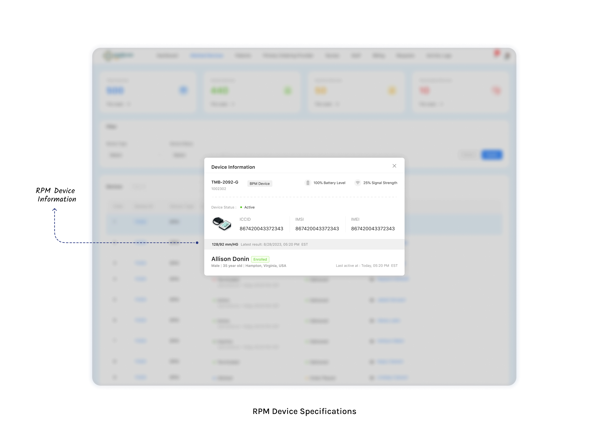
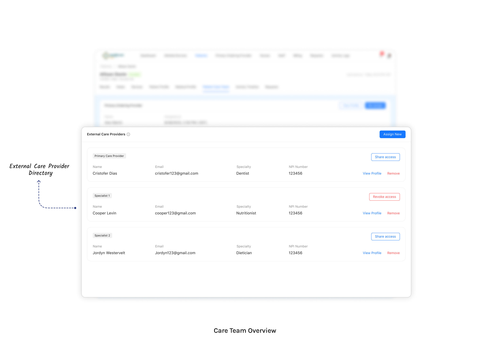
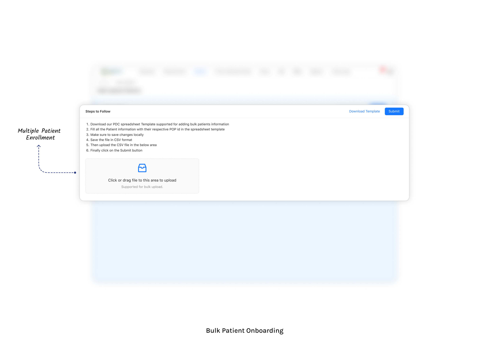


Your Specific Contributions
- Created complete BRD with 50+ functional requirements
- Designed clinical review workflow with time-tracking logic
- Documented device threshold configuration module
- Wrote user stories for patient enrollment flow (15 stories)
- Mapped CPT billing logic to system requirements
STAR Response: "Tell me about an RPM project"
2. Telehealth Platform
Business Context
Problem: UK healthcare providers needed a complete telehealth solution for video consultations, with integrated clinical documentation, e-prescribing, and lab ordering capabilities.
Solution: Full-featured telehealth platform with SOAP note documentation, e-prescription integration, lab orders, and appointment scheduling.
Key Features You Must Know
- Video Consultation: WebRTC-based video calls, screen sharing, waiting room
- SOAP Notes: Customizable templates for different visit types
- e-Prescription: Integration with UK pharmacy networks
- Lab Orders: Electronic lab requisitions to diagnostic centers
- Appointment Scheduling: Provider calendar, patient self-booking
- Multi-Role Access: GP, Pharmacist, Admin, Patient portals
Appointment Booking - All Scenarios
Master all the ways appointments can be created and managed:
Scenario 1: Patient Self-Booking (Portal/App)
- Patient logs into portal → Views available providers by specialty
- Selects provider → Sees available time slots (respecting provider's working hours)
- Chooses appointment type: New Patient (longer slot) or Follow-up (shorter slot)
- Selects preferred date/time from calendar grid
- Fills intake form (reason for visit, symptoms, medications)
- Confirms booking → Receives email/SMS confirmation with video link
- Reminder sent: 24 hours before + 1 hour before appointment
Scenario 2: Reception/Admin Books for Patient
- Patient calls clinic → Reception searches patient by name/DOB/phone
- If new patient: Creates patient record first (demographics, insurance)
- Reception selects provider → Sees provider's calendar view
- Checks patient's preferred time against provider availability
- Books slot → Adds notes (e.g., "Patient prefers afternoon, needs translator")
- System sends confirmation to patient via email/SMS
Scenario 3: Provider Requests Follow-up
- During/after consultation, provider marks "Follow-up needed in X days/weeks"
- System auto-suggests available slots around that timeframe
- Provider selects slot OR sends options to patient to choose
- If patient chooses: They receive link to select from 3 suggested times
Scenario 4: Recurring Appointments
| Type | How It Works |
|---|---|
| Series booking | Book same slot weekly/biweekly for X sessions (e.g., therapy) |
| Auto-schedule | System suggests next appointment based on care plan (e.g., every 3 months for diabetes review) |
Scenario 5: Rescheduling
| Who Reschedules | Process | Notifications |
|---|---|---|
| Patient | Via portal (if >24 hrs before) → Select new time from available slots | Provider notified of change |
| Clinic | Admin moves appointment → Selects reason (provider unavailable, emergency) | Patient notified + offered alternatives |
| Provider | Marks day as "unavailable" → System auto-reschedules all affected | Batch notification to all patients |
Scenario 6: Cancellation
| Timing | Patient Cancels | Clinic Cancels |
|---|---|---|
| >24 hours | No fee, slot released to waitlist | Patient offered immediate rebooking |
| <24 hours | Late cancellation fee may apply (configurable) | Apology + priority rebooking |
| No-show | No-show fee, flagged in patient record | N/A |
Scenario 7: Waitlist Management
- Patient wants appointment but no slots available
- Adds to waitlist with preferred dates/times
- When slot opens (cancellation), system notifies waitlist patients in order
- First to confirm gets the slot (time-limited acceptance window)
Scenario 8: Day-of Appointment (Check-in Flow)
- Patient receives "Check-in now" link 15 min before appointment
- Completes/updates intake form, confirms insurance, signs consent
- Enters virtual waiting room (status: "Checked In")
- Provider sees queue → Admits patient to video call
- After call: Status changes to "Completed" → Triggers billing charge capture
System Flow (5 Actors)
| Actor | Key Functions |
|---|---|
| Patient | Book appointment, join video call, view prescriptions, access records |
| GP (Doctor) | Conduct consultation, write SOAP notes, prescribe, order labs |
| Pharmacy | Receive e-prescriptions, dispense medications, update status |
| Diagnostic Center | Receive lab orders, upload results, notify provider |
| Admin | Manage users, configure system, view reports |
GDPR Compliance Features
- Consent Management: Explicit consent capture before data processing
- Data Subject Rights: Export personal data, right to erasure
- Data Minimization: Collect only necessary information
- Breach Notification: 72-hour notification workflow
Actual Flowcharts (Telehealth Platform)


Your Specific Contributions
- Documented complete telehealth workflow (5 actors, 30+ touchpoints)
- Created SOAP note templates for 8 visit types
- Mapped GDPR requirements to system features
- Designed prescription workflow with pharmacy integration
- Wrote PRD with wireframe references
3. Wellness & Meditation Platform (Luvo)
Business Context
Problem: Users needed a comprehensive wellness app combining meditation, fitness, yoga, and health tracking in one platform.
Solution: Mobile app with guided meditation audios, workout plans, yoga sessions, sleep tracking, and fitness progress analytics.
Note: This is NOT a mental health/therapy platform. It's wellness content delivery (meditation audios, workout videos, yoga sessions).
Key Features You Must Know
- Meditation Library: Categorized audio sessions (stress, sleep, focus, anxiety)
- Workout Plans: Video-guided exercises, difficulty levels, equipment filters
- Yoga Sessions: Beginner to advanced flows, pose instructions
- Sleep Tracking: Sleep duration, quality scoring, trends
- Fitness Tracking: Steps, calories, activity minutes integration
- Progress Dashboard: Streaks, achievements, wellness score
Platform & User Engagement
Platforms: iOS + Android + Web (cross-platform)
Motto: "Zest2Live" - Life is a priceless gem, to be cherished, nourished, and taken care of.
| Content Category | Types | User Interaction |
|---|---|---|
| Meditation | Guided audio sessions - stress, sleep, focus, anxiety categories | Browse → Play → Track duration → Mark complete → Streak |
| Workouts | Video-guided exercises, difficulty levels, equipment filters | Filter → Select → Follow along → Log calories burned |
| Yoga | Beginner to advanced flows, pose library with instructions | Choose flow → Follow sequence → Track practice time |
| Health Tracking | Steps, calories, water intake, heart rate, sleep | Auto-sync (wearable) or manual entry → View dashboard → Trends |
User Engagement & Gamification System
| Feature | How It Works |
|---|---|
| Goal Setting | User sets daily/weekly wellness goals (e.g., 10 min meditation, 30 min workout, 8 glasses water) |
| Daily Routines | Pre-built or custom morning/evening routines combining meditation + workout + tracking |
| Streaks | Consecutive days completing wellness activities → badge rewards |
| Wellness Score | Composite score based on sleep quality, activity, meditation consistency, hydration |
| Progress Dashboard | Weekly/monthly trends across all tracked metrics with visual charts |
Content Delivery Architecture
| Component | Technology | Purpose |
|---|---|---|
| Audio Streaming | AWS S3 + CloudFront CDN | Low-latency global delivery for meditation audio |
| Video Streaming | HLS (HTTP Live Streaming) | Adaptive bitrate for workout/yoga videos across connection speeds |
| Offline Mode | Local device storage | Download content for offline access (flights, no-signal areas) |
| Admin CMS | Web dashboard | Upload, categorize, and manage content library |
Admin CMS Workflow
- Admin logs into CMS → Navigates to content type (Meditation / Workout / Yoga / Article)
- Uploads media file (audio/video) → Adds metadata (title, category, difficulty, duration)
- Assigns tags (stress, sleep, beginner, equipment-needed, etc.)
- Sets visibility: Free / Premium / Featured
- Publishes → Content available in user app based on category filters
Actual Screenshot (Luvo App)
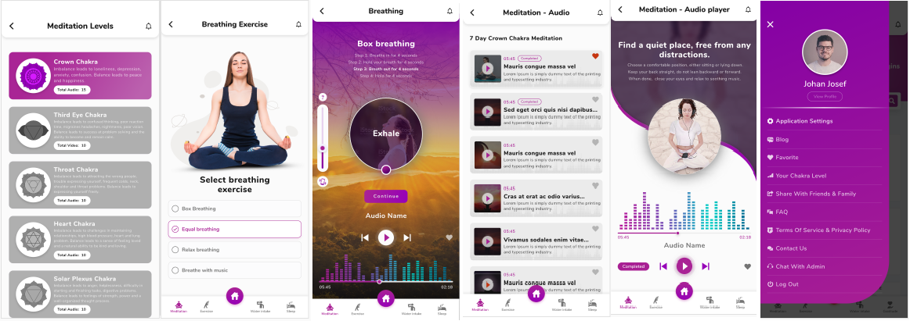
Your Specific Contributions
- Created comprehensive proposal document with feature breakdown
- Designed content categorization taxonomy (categories, difficulty levels, equipment tags)
- Documented user progression/gamification system (goals, streaks, wellness score)
- Wrote requirements for admin content management system
- Defined health tracking data flow (manual entry + wearable sync)
STAR Response: "Tell me about the wellness platform"
4. Cozie - Health Data Collection (watchOS)
Business Context
Problem: Academic researchers studying built environment effects on occupant health needed to collect 20+ health parameters from Apple Watch users for building design studies.
Solution: watchOS app integrated with HealthKit, collecting physiological data and environmental surveys in real-time.
Key Features You Must Know
- HealthKit Integration: Heart rate, HRV, steps, sleep, noise exposure, etc.
- Micro-Surveys: Quick comfort surveys (thermal, air quality, noise)
- Background Data Collection: Continuous passive collection
- Study Management: Multiple concurrent research studies
- Data Export: Anonymized CSV/JSON export for researchers
- Consent Flow: IRB-compliant informed consent
Health Parameters Collected (20+)
| Category | Parameters | HealthKit Source |
|---|---|---|
| Activity | Step Count, Distance Walked, Flights Climbed, Active Calories, Exercise Minutes, Stand Hours | HKQuantityType (activity) |
| Vitals | Heart Rate, Heart Rate Variability, Resting Heart Rate, Blood Oxygen, Respiratory Rate | HKQuantityType (vitals) |
| Sleep | Sleep Duration, Sleep Stages (REM, Deep, Light, Awake) | HKCategoryType (sleepAnalysis) |
| Mobility | Walking Speed, Walking Asymmetry, Double Support Time, Step Length | HKQuantityType (mobility) |
| Environment | Noise Exposure (ambient dB level) | HKQuantityType (environmentalAudio) |
Technical Architecture
| Component | Technology | Function |
|---|---|---|
| watchOS App | Swift + HealthKit + ResearchKit | Data collection, micro-surveys, background monitoring |
| iOS Companion App | Swift + WatchConnectivity | Settings, data display, export, detailed surveys |
| Data Sync | WatchConnectivity sessions | Background + foreground data transfer between Watch ↔ iPhone |
| Notifications | Firebase Push | Survey reminders, study participation prompts |
| Data Recording | 1-minute intervals | Apple Watch sensor data recorded continuously in background |
Data Collection Workflow
Scenario 1: Passive Data Collection (Background)
- Researcher configures study: Participant ID, Experiment ID, parameters to collect
- Participant installs app → Grants HealthKit permissions (Bluetooth, sensors, background activity)
- App begins background data recording at 1-minute intervals
- Data queried from HealthKit → Stored locally → Synced to iPhone via WatchConnectivity
- Researcher downloads collected data as text file for analysis
Scenario 2: Active Surveys (Micro-Surveys)
- System sends push notification at configured frequency (e.g., every 2 hours during participation hours)
- Participant taps notification → Opens micro-survey on watch
- Answers 3-5 quick comfort questions (thermal comfort, air quality, noise level, light level)
- Responses timestamped and linked to concurrent physiological data
- Data enables correlation: "Heart rate + ambient temperature + reported comfort level"
Scenario 3: Study Configuration
| Setting | Options | Purpose |
|---|---|---|
| Participation Days | Specific weekdays (e.g., Mon-Fri only) | Only collect during work days for building studies |
| Participation Hours | Time range (e.g., 8AM - 6PM) | Only trigger surveys during active study hours |
| Notification Frequency | Every X hours/minutes | Balance data density vs participant burden |
| Question Flow | Selectable from list of configured surveys | Different surveys for different study phases |
Research Use Case (Why It Matters)
The research team at NUS (National University of Singapore) studies how building design affects occupant health. By collecting real-time physiological data alongside environmental comfort surveys, they can correlate: "Does a building with natural ventilation improve heart rate variability and reported comfort?"
Unique BA Challenge
This project required understanding both Apple ecosystem constraints (HealthKit permissions, background processing limits, WatchConnectivity sessions) AND research methodology (IRB consent requirements, data anonymization, survey design). Bridging technical platform limitations with academic research needs was the key BA challenge.
Actual Screenshots (Cozie watchOS App)


Your Specific Contributions
- Documented new features for watchOS app enhancements
- Created survey question configuration requirements (participation days/hours, frequency, question flows)
- Mapped 20+ HealthKit data types to research parameter needs
- Designed researcher dashboard specifications for data export and visualization
- Documented WatchConnectivity data sync architecture between Watch ↔ iPhone
- Specified IRB-compliant consent flow requirements
STAR Response: "Tell me about the wearable/IoT project"
5. Supplement Management Platform
Business Context
Problem: Users taking multiple supplements needed a way to track intake, get reminders, and understand which supplements help which health conditions.
Solution: Mobile app for supplement adherence tracking with personalized schedules, health condition mapping, and reminder system.
Note: This is for SUPPLEMENTS (vitamins, minerals, herbs), not prescription medications. Different regulatory requirements.
Key Features You Must Know
- Supplement Library: Database of supplements with benefits, dosing info
- Personalized Schedule: Morning/noon/evening timing based on absorption
- Health Condition Mapping: "I have arthritis" → suggests relevant supplements
- Daily Checklist: Mark supplements taken, track adherence %
- Reminder Notifications: Push notifications at scheduled times
- Adherence Analytics: Weekly/monthly compliance reports
- Admin CMS: Manage supplement database, health associations
Business Model
| Tier | Features | Revenue |
|---|---|---|
| Free | Adding, browsing, searching supplements; basic schedule; reminders | User acquisition |
| Premium | Health condition associations, articles/blogs, advanced analytics | In-app purchase (subscription) |
Supplement-Condition Association (Core Logic)
The key technical feature: Many-to-many relationship between health conditions/sub-conditions and supplements with relevancy scoring.
| Element | How It Works |
|---|---|
| Conditions → Supplements | Each health condition (e.g., "Arthritis") links to multiple supplements (Glucosamine, Omega-3, Turmeric) with relevancy scores (1-100) |
| Sub-conditions | Conditions can have sub-categories (e.g., Arthritis → Rheumatoid, Osteo) with different supplement recommendations |
| Relevancy Ranking | Higher scored supplements appear first in search results and suggestions |
| Warnings | Each supplement has admin-defined warnings (interactions, contraindications) shown to user — non-blocking |
Important Distinction
Warnings are informational only — user is free to make their own decisions. The app does NOT restrict users from adding supplements. This was a deliberate product decision to avoid liability while providing guidance.
User Flow - Detailed
Scenario 1: New User Onboarding
- User signs up → Enters health goals and current conditions
- System queries condition-supplement associations → Displays relevant supplements ranked by relevancy score
- User browses supplements → Views details (benefits, dosing info, articles)
- User adds supplements to their personal regimen
- System creates optimized daily schedule (e.g., calcium separate from iron for absorption)
- User configures reminder times (morning/noon/evening)
Scenario 2: Daily Adherence Tracking
- Morning: Push notification → "Time to take: Vitamin D, Fish Oil, Multivitamin"
- User opens app → Sees daily checklist with scheduled supplements
- Marks each supplement as taken (checkbox) or skips
- System calculates daily adherence percentage
- Weekly: Adherence summary shows compliance trends (Mon-Sun view)
- Monthly: Analytics dashboard with adherence % over time, missed supplements patterns
Scenario 3: Custom Supplement Creation
- User can't find their supplement in the database
- Creates custom supplement: Name, dosage, frequency, time of day
- Custom supplement added to their schedule alongside standard ones
- Tracked in adherence like any other supplement
Admin Panel (Web) - 3 Roles
| Role | Access | Key Functions |
|---|---|---|
| Admin | Full system access | All below + user management + billing + revenue reports + system settings |
| Researcher | Content management | Manage supplements master data, health conditions, condition-supplement associations with relevancy scores |
| Blogger | Articles only | Create/edit/publish articles, link to supplements/conditions, set free/premium access |
Technical Stack
| Layer | Technology |
|---|---|
| Mobile App | React Native (iOS + Android) + Redux |
| Admin Web | Angular 4.0 (MEAN Stack) |
| Backend | Node.js + Express.js |
| Database | MongoDB (NoSQL - suits many-to-many associations) |
| Notifications | Firebase Push Notifications |
Actual Flowcharts & Diagrams (Supplement App)

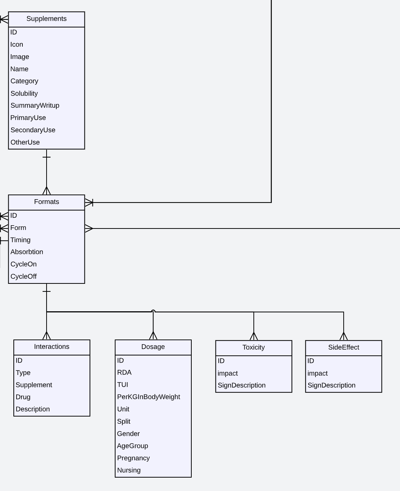


Your Specific Contributions
- Created comprehensive proposal document (2.2MB) with full feature breakdown
- Designed health condition → supplement mapping logic with relevancy scoring
- Documented 3-role admin CMS (Admin, Researcher, Blogger) with permission matrix
- Created user stories for onboarding flow and daily adherence tracking
- Designed supplement interaction warning system (informational, non-blocking)
- Documented freemium business model (free browse/add, premium conditions/articles)
STAR Response: "Tell me about the supplement project"
6. Payroll Management System (Blink)
Business Context
Problem: Companies needed automated payroll processing with multi-company support, tax calculations, and compliance reporting.
Solution: End-to-end payroll system handling regular payroll, off-cycle payments, contractor payments, and tax filings. Integrates with CheckHQ for tax calculations and filings.
Key Features You Must Know
- Regular Payroll: Bi-weekly/monthly processing, gross-to-net calculation
- Off-Cycle Payroll: Bonuses, corrections, termination pay, severance
- Contractor Payments: 1099 payments, different tax treatment
- Tax Calculations: Federal, state, local withholdings (automated via CheckHQ)
- Direct Deposit (ACH): 1-3 day processing based on company tier
- Wire Transfer: Same-day/next-day option for urgent payments
- Multi-Company: Single dashboard managing multiple entities
- Employee Portal: Pay stubs, tax documents, personal info updates
- Compliance Reports: Tax filings, year-end W-2/1099 generation
Regular Payroll - Complete Workflow (3 Steps)
Step 1: Setup & Configuration
| Field | Description | Scenarios |
|---|---|---|
| Approval Deadline | Submit by date from CheckHQ (usually 3 days before pay date) | Cut-off: 12:00 PM PT (3-day) or 5:00 PM PT (1-2 day processing) |
| Pay Date | When employees receive payment | Must match scheduled date for regular payroll |
| Pay Period | Date range covered | Auto-picked based on payroll schedule (weekly/bi-weekly/monthly) |
| Funding Method | How employer funds payroll |
ACH: Default, 1-2 business days Wire: Admin-enabled, same-day option |
Wire Transfer Special Rules
- Pay by 8:30 AM ET on payday → Wire by 5 PM ET day before
- Pay by 6 PM ET on payday → Wire by 12:30 PM ET on payday (support only)
- Admin must enable via: Admin App → Companies → Edit → Metadata →
"canChangeFundingMethod": true
Step 2: Review Calculations
| Category | Formula/Source | What It Includes |
|---|---|---|
| What Blink Handles (Cash Requirements) |
checkHQCalculatedData.totals.cash_requirement |
• Direct deposits (net pay where payment method = direct_deposit) • Employee taxes (payer = 'employee') • Employer taxes (payer = 'company') • Managed deductions (child support where managed = true) |
| What Employer Handles | Total Payroll Cost - Cash Requirements |
• Paper checks (manual payment method) • Benefits (employee + company contributions) • Unmanaged post-tax deductions |
| Total Payroll Cost | checkHQCalculatedData.totals.liability - cash_tips | Sum of: employee_net + employee_taxes + company_taxes + company_benefits |
Gross Pay Calculation
+ Overtime hours × OT rate
+ Double overtime × 2x rate
+ PTO hours × rate
+ Commission + Bonus + Holiday pay
+ Cash tips + Custom hours × rate
+ Paycheck tips + Severance (off-cycle only)
Hourly Rate from Salary
| Pay Frequency | Divisor |
|---|---|
| Weekly | ÷ 40 |
| Bi-weekly | ÷ 80 |
| Monthly | ÷ 173.33 |
| Yearly | ÷ 2080 |
Step 3: Post-Approval Tracking
| Status | Description |
|---|---|
| Pending | Approved but not yet processed/withdrawn |
| Paid | Funds disbursed to employees/agencies |
| Failed | Bank error, invalid account, insufficient funds → requires employer action |
Extra Scenarios (Edge Cases)
Scenario 1: Failed Payment (Retry Payment)
If payment fails due to employer bank account issue:
| Option | How It Works |
|---|---|
| Retry via Wire (Recommended) |
• Keeps company in good standing • Next business day as pay date • Shows wire deadline, amount, bank details • Wire status: Pending → Paid/Failed |
| Retry via ACH |
• Select different bank account • Limited to 3 retry attempts before company termination risk • New pay date auto-calculated |
| Contact Support | If retry flag = false, no self-service retry available |
Scenario 2: Overdue (Late) Payrolls
When scheduled payroll passes approval deadline without approval:
Overdue (No Draft Created)
Pay date NOT surpassed:
- "Pay employees on time" via Wire
- Creates off-cycle with auto-populated data
Pay date surpassed:
- "Still pay employees" via off-cycle
- New pay date = next available
Overdue (Draft Exists)
Pay date NOT surpassed:
- "Run this payroll" with Wire/ACH choice
- Original pay date still possible with Wire
Pay date surpassed:
- Prefill next available pay date
- "Inform employees about delay" warning
Both scenarios include: Option to "Skip this payroll" with required justification note.
Scenario 3: PTO (Paid Time Off) Handling
| Condition | System Behavior |
|---|---|
| PTO applied for employee |
• Accrued per accrual method • Deducted from remaining balance • Can go negative if consumed > available |
| PTO NOT applied | No deduction, but still accrues per method |
Scenario 4: Holiday Wire Deadline Edge Case
Problem: If today is a holiday (e.g., June 19th) and user selects tomorrow (June 20th) as pay date,
the system returns wire deadline as June 18th, 5 PM PT — which is already passed.
Solution: Block tomorrow as pay date when today is a holiday to prevent impossible wire deadlines.
Tax Deposits (Step 3 Details)
| Tax Type | Employee Taxes | Employer Taxes |
|---|---|---|
| Federal | FIT (Federal Income Tax) | Employer FUTA |
| Social Security | FICA (6.2%) | Employer FICA (6.2%) |
| Medicare | Medicare (1.45%) | Employer Medicare (1.45%) |
Tax Deposit Statuses
| Funding Status | Deposit Status | Meaning |
|---|---|---|
| Funded | Deposited | Tax paid to agency ✓ |
| Funded | Pending | Funded but not yet deposited |
| Pending | Pending | Awaiting employer funding |
| Failed | — | Funding failed, employer action needed |
Actual Screenshots (Blink Payroll)
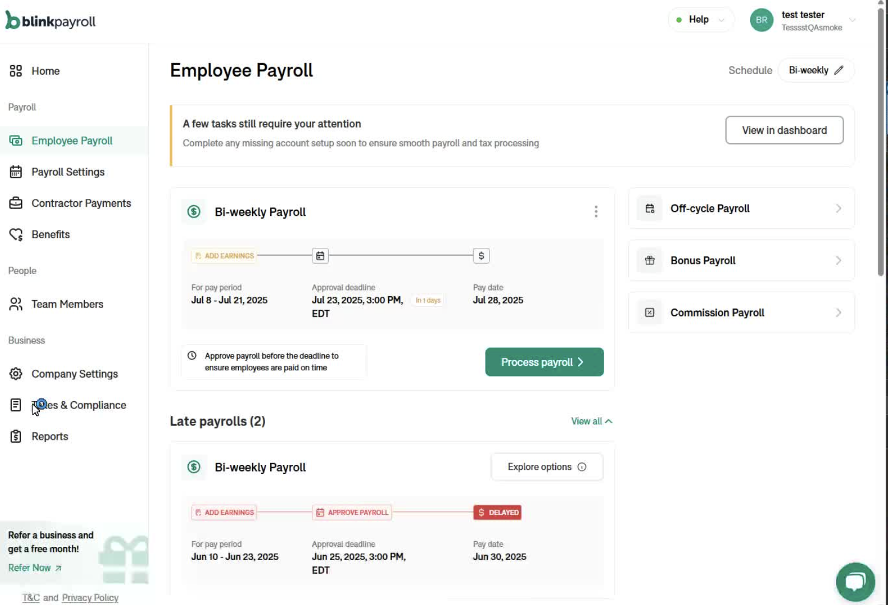
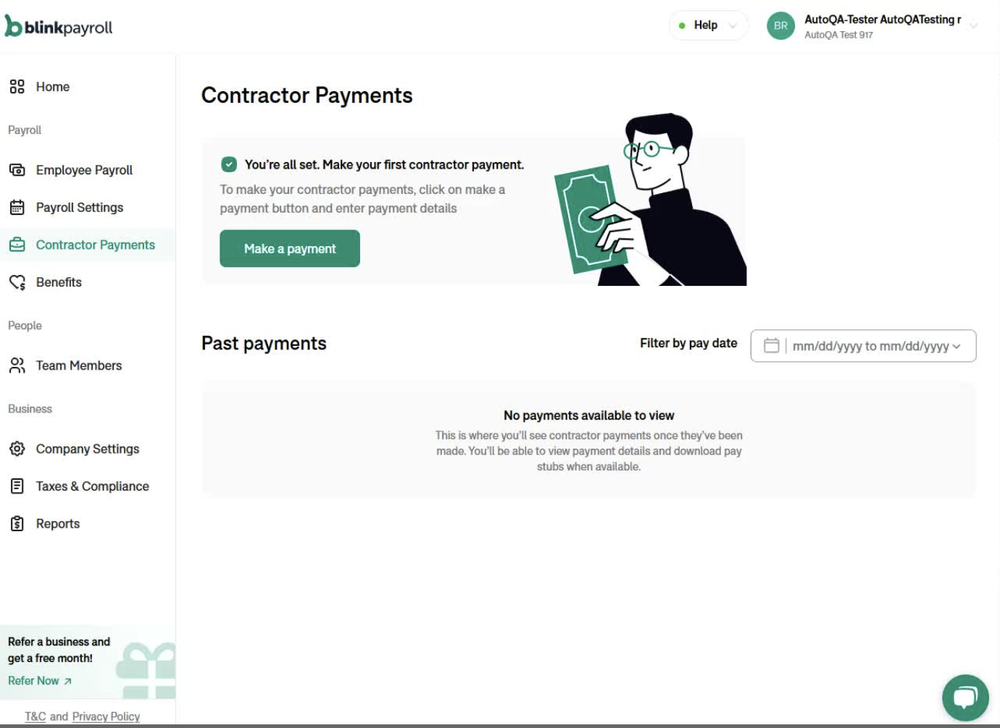
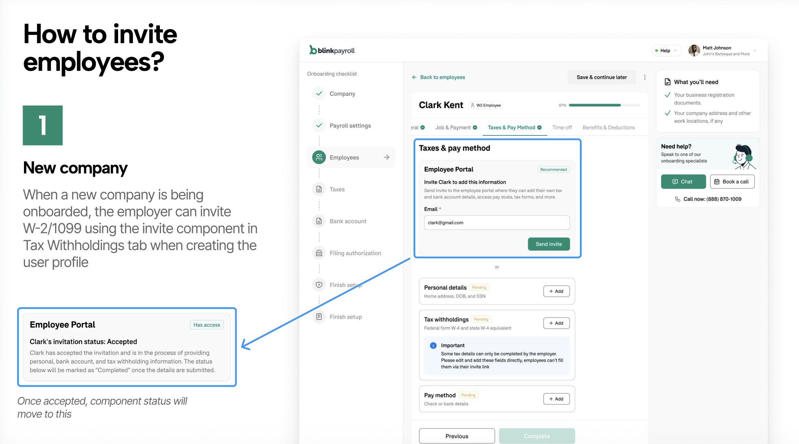
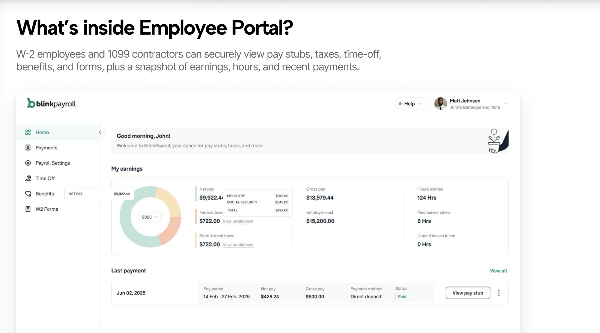

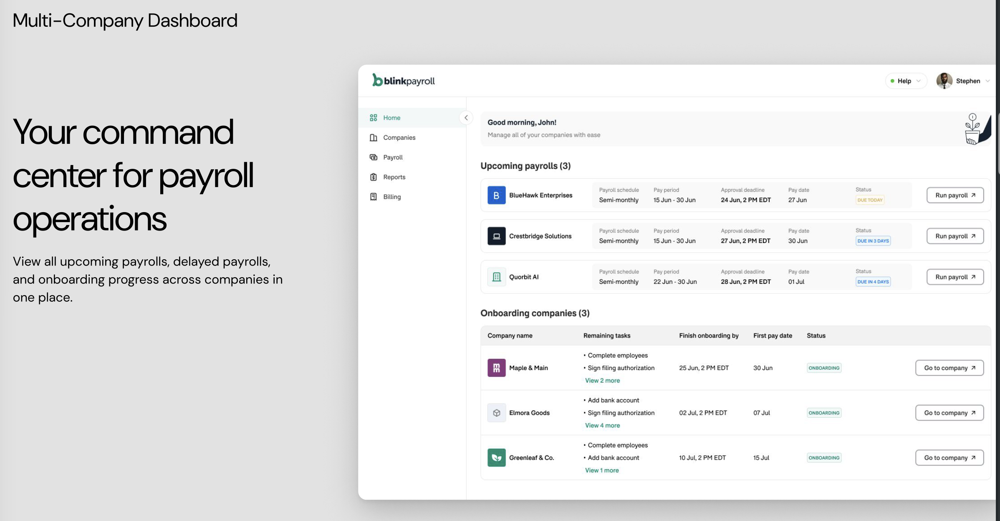
Your Specific Contributions
- Created BRD for payroll module with 40+ requirements
- Documented gross-to-net calculation logic with all edge cases
- Designed multi-company switching workflow
- Wrote SOP for regular payroll processing (13 steps)
- Documented overdue/late payroll handling scenarios
- Created wire transfer deadline logic documentation
- Created UAT test cases for payroll calculations
7. Legal Document Automation Platform
Business Context
Problem: Users needed to create legal documents (leases, contracts, wills) without hiring expensive lawyers.
Solution: Document automation platform (similar to LawDepot) where users answer guided questions and system generates customized legal documents.
Key Features You Must Know
- Document Templates: Pre-built templates for common legal documents
- Guided Questionnaire: Step-by-step questions to collect information
- Conditional Logic: Questions appear/hide based on previous answers
- Document Assembly: Merge answers into template to generate document
- PDF Generation: Professional formatted PDF output
- E-Signature: Integration for electronic signing
- Document Storage: Cloud storage for user's documents
Platform Structure (from actual LegalDocs UI)
| Navigation | Document Categories |
|---|---|
| Real Estate | Residential Lease, Commercial Lease, Lease with Option to Purchase, Roommate Agreement, Sublease |
| Business | Employment Contract, NDA, Service Agreement, Partnership Agreement, Independent Contractor |
| Personal | Power of Attorney, Last Will and Testament, Prenuptial Agreement, Promissory Note |
User Dashboard
| Tab | Function |
|---|---|
| My Account | Profile settings, email, password management |
| Dashboard | "What do you want to do next?" - File Management, Latest Articles links |
| Subscription | Plan management, billing, upgrade options |
| File Management | Manage existing files in the dashboard - edit, download, duplicate |
Document Assembly - How It Works (Real Example: Residential Lease)
The platform uses a guided questionnaire to collect information, then assembles a complete legal document by merging answers into a template with conditional sections.
Questionnaire Fields → Document Sections
| Question Asked | Maps to Document Section | Conditional Logic |
|---|---|---|
| Landlord name(s) | Header: "BETWEEN: (Landlord)" | If multiple → "collectively and individually" |
| Tenant name(s) | Header: "AND: (Tenant)" | If multiple → joint & several liability clause added |
| Is there a guarantor? | Guarantor section | If yes → adds guarantor name and liability clause |
| Property address | "Leased Property" section | Always required |
| Are pets allowed? | Pet clause + Pet Fee section | If yes → adds pet fee field; If no → "No animals" clause |
| Is parking included? | Parking clause | If no → "Parking not provided" clause |
| Smoking/vaping policy? | Smoking/vaping restrictions | Separate clauses for each if prohibited |
| Lease start/end dates | "Term" section with exact times (12:00 noon) | If early possession → additional possession date clause |
| Monthly rent amount | "Rent" section | Always required |
| Payment methods? | Payment method list (cash, direct debit, etc.) | Checkboxes → bullet list in document |
| Security deposit required? | "Security Deposit" section | If no → "No security deposit required" |
| Which state? | State-specific clauses | California → Tenant Protection Act exemption, Megan's Law notice, late fee rules per Act |
| Option to purchase? | Title changes to "with Option to Purchase" + purchase option clause | If yes → entire purchase option section added |
| Insurance required? | "Insurance" section | If yes → specifies coverage types selected |
Conditional Logic Examples (from actual generated document)
| Condition | What Appears in Document |
|---|---|
| State = California | Tenant Protection Act of 2019 exemption clause (Section 1947.12, 1946.2), Megan's Law notice (Section 290.46 Penal Code), California-specific late fee rules |
| Micromobility = Allowed | Clause about storage, charging, fire safety standards, indoor vs outdoor storage, liability insurance |
| Multiple Tenants = Yes | "Jointly and severally liable for each other's acts, omissions and liabilities" |
| Early Possession = Yes | "Notwithstanding... the Tenant is entitled to possession at [date]" clause |
| Attorney Fees = Yes | Unsuccessful party pays successful party's attorney fees clause |
Key BA Insight
The core technical challenge is the conditional logic engine. Each question answer can show/hide subsequent questions AND add/remove document sections. State selection alone can change 5-10 clauses. This requires a robust rule engine and extensive testing of all question path combinations.
Questionnaire Step-by-Step (Actual UI - Lease Agreement)
The questionnaire is divided into 7 tabbed steps. Each step collects related information with visual selectors and smart defaults:
| Step | Tab Name | What's Collected |
|---|---|---|
| 1 | General | Property type selection with visual icons: House, Room, Apartment, Mobile home, Condo, Duplex, Townhouse, Basement suite, Commercial, Other |
| 2 | Lease | Lease type (standard, with option to purchase), smoking/vaping/pet policies |
| 3 | Parties | Landlord details, Tenant details, Guarantor (optional), contact information |
| 4 | Property | Property address, parking, improvements, micromobility storage |
| 5 | Rent | Monthly amount, payment methods (checkboxes), late fees, security deposit |
| 6 | Terms | Start/end dates, early possession, utilities, insurance, attorney fees |
| 7 | Final Details | Additional clauses, governing state, notice addresses, review & generate |
Each step has "SAVE & CONTINUE" + "Skip for now" options. Users can navigate between tabs freely.
Admin Template Builder (Form.io Backend)
The platform uses Form.io as the form/questionnaire builder engine. Admin panel features:
| Section | Function |
|---|---|
| Forms | List of all document templates. Each can be Launched, Copied, or Deleted. Shows last updated date. |
| Resources | Shared data resources (clause libraries, party types) reusable across forms |
| Data | View submitted form data (generated documents, user responses) |
| API Explorer | Form.io REST API endpoints for integration with document assembly engine |
Forms are state-specific: "Lease Agreement (Standard) - CA" is a separate template from other states, each with its own conditional clauses.
Technical Architecture (How It Connects)
Form.io (questionnaire engine) → captures user answers as JSON → Document Assembly Engine → merges answers into legal template with conditional sections → PDF Generator → produces formatted legal document → File Storage → saved to user's File Management dashboard
Document Assembly Workflow
- Select Document Type: User chooses from Real Estate / Business / Personal category
- Answer Questionnaire: 7-step tabbed interface (General → Lease → Parties → Property → Rent → Terms → Final Details)
- Preview Document: Real-time preview showing assembled document with user's answers
- Edit/Revise: User can go back to any tab and change answers, document updates in real-time
- Generate PDF: Professional formatted legal document ready for signatures
- E-Signature (optional): Send to other parties for electronic signing
- Store in File Management: Document saved to user's dashboard for future access/editing
Generated Document Sections (Residential Lease Example)
A generated lease includes these standard sections (all populated from questionnaire):
Actual Screenshots (LegalDocs Platform)


Your Specific Contributions
- Documented 7-step questionnaire flow for lease agreements (General → Lease → Parties → Property → Rent → Terms → Final Details)
- Mapped conditional logic rules for document assembly (state-specific clauses, optional sections, 15+ branching questions)
- Worked with Form.io as the questionnaire engine — configured forms, resources, and data mappings
- Designed template management admin interface (Launch, Copy, Delete templates per state)
- Created user flow from document selection → questionnaire → preview → PDF generation → File Management storage
- Documented state-specific clause variations (California: Tenant Protection Act of 2019, Megan's Law Section 290.46, late fee per Act)
- Mapped property types (House, Room, Apartment, Mobile home, Condo, Duplex, Townhouse, Basement suite, Commercial, Other) to relevant conditional clauses
STAR Response: "Tell me about the legal document platform"
8. Vehicle Auction Platform (Snelwegdeals)
Business Context
Problem: Car dealers in Netherlands needed a platform to buy and sell vehicles through structured auctions, with dealer verification and secure bidding.
Solution: B2B auction marketplace connecting car sellers with verified dealers through timed bidding events.
Key Features You Must Know
- Dealer Onboarding: KYC verification, business registration check
- Vehicle Listing: Detailed specs, condition reports, 360° photos
- Auction Management: Timed auctions, reserve prices, auto-extend on late bids
- Bidding Engine: Real-time bidding, max bid proxy, bid history
- Winner Selection: Automatic winner determination, runner-up if winner declines
- Contract Generation: Auto-generate purchase agreements
- Payment Escrow: Secure payment holding until vehicle delivered
Three Portal System
| Portal | Users | Key Functions |
|---|---|---|
| Customer Website | Car Sellers | List vehicles, view bids, accept offers |
| Dealer Dashboard | Verified Dealers | Browse auctions, place bids, manage purchases |
| Super Admin | Platform Operators | Verify dealers, manage auctions, resolve disputes |
Auction Flow - Basic
- Seller lists vehicle with photos, specs, minimum price
- Admin reviews and approves listing
- Auction goes live for set duration (e.g., 48 hours)
- Verified dealers place bids in real-time
- If bid in last 5 minutes, auction extends
- Winner notified, 24 hours to complete payment
- Logistics coordinated for vehicle pickup
Bidding System - All Scenarios
Scenario 1: Standard Bidding Flow
- Dealer browses active auctions → Filters by make/model/year/price range
- Clicks "View Details" → Sees all vehicle specs, photos, condition report
- Current bid: €2,000 | Minimum increment: €50
- Dealer enters €2,100 → System validates (>= current + increment)
- Bid placed → Dealer becomes "Highest Bidder"
- Previous high bidder notified: "You've been outbid"
- Seller sees bid in dashboard but NOT dealer identity (anonymized)
Scenario 2: Proxy/Max Bid
- Dealer wants to bid up to €5,000 without monitoring
- Sets "Max Bid" of €5,000 (current bid is €2,000)
- System places bid of €2,050 (minimum increment above current)
- Another dealer bids €2,100 → System auto-bids €2,150 for first dealer
- Continues until max reached or auction ends
- If two dealers have same max, earlier bid wins
Scenario 3: Auction Extension (Sniping Prevention)
| Condition | System Action |
|---|---|
| Bid placed with < 5 minutes remaining | Auction extends by 5 minutes from bid time |
| New bid during extension | Another 5-minute extension added |
| No bids in last 5 minutes | Auction ends at scheduled time |
Scenario 4: Reserve Price Not Met
- Seller sets reserve price: €3,000 (hidden from bidders)
- Highest bid at auction end: €2,500
- System notifies: "Reserve not met"
- Option A: Seller can accept highest bid anyway
- Option B: Seller declines → Vehicle relisted or removed
- Option C: System auto-contacts highest bidder to negotiate
Scenario 5: Winner Selection Edge Cases
| Situation | Resolution |
|---|---|
| Winner doesn't pay within 24 hrs | Offer goes to 2nd highest bidder (runner-up) |
| Runner-up also declines | Vehicle relisted OR seller contacts remaining bidders |
| Winner disputes vehicle condition | Negotiation window opens (seller can adjust price or cancel) |
| Undisclosed damage discovered | Dealer can negotiate post-sale per contract terms |
Scenario 6: B2B Dealer-to-Dealer Sales
- Dealer lists vehicle in B2B tab (selling their inventory)
- Other dealers can bid (same mechanics)
- Business owner (platform) takes % commission on final sale
- Example: Selling price €2,500 → Platform takes €500 fee → Seller gets €2,000
Scenario 7: Complete Deal Flow (Post-Auction)
- Auction ends → Winner confirmed
- Platform owner calls seller with offer (showing lower amount, keeping margin)
- Seller agrees → Signs digital selling contract
- Platform calls dealer → Shares seller contact details
- Dealer pays: €2,500 (to seller) + €500 (platform fee)
- Dealer collects vehicle → Sends receipt to platform for confirmation
- Deal marked "Completed" in system
Actual Flowcharts (Vehicle Auction Platform)


Wireframes & Designs (Snelwegdeals)


Your Specific Contributions
- Created complete project documentation (295KB PDF)
- Designed bidding engine workflow with edge cases
- Documented dealer verification process
- Created wireframes for all three portals
- Wrote feature breakdown spreadsheet
9. School Management Platform (Sekou)
Business Context
Problem: Schools in France needed a comprehensive management system handling students, parents, teachers, and administrators with role-based access.
Solution: Multi-role school management platform covering admissions, attendance, grades, communication, and fee management.
Key Features You Must Know
- Admissions: Online application, document upload, status tracking
- Student Profiles: Demographics, academic history, health info
- Attendance: Daily attendance marking, absence alerts to parents
- Grade Management: Assignments, exams, report card generation
- Timetable: Class scheduling, room allocation, substitution management
- Communication: Announcements, parent-teacher messaging
- Fee Management: Invoice generation, payment tracking, reminders
Role-Based Access
| Role | Access |
|---|---|
| Student | View grades, timetable, assignments, announcements |
| Parent | View child's grades/attendance, communicate with teachers, pay fees |
| Teacher | Mark attendance, enter grades, create assignments, message parents |
| Admin | Full access - manage users, configure system, view reports |
Wireframes & Designs (Sekou - School Platform)


Your Specific Contributions
- Gathered requirements from school stakeholders (1.2MB Excel)
- Created product specification document
- Designed role-based permission matrix
- Documented parent-teacher communication workflow
- Created system flow diagrams
10. Behavioral Health Platform (Oasis / Adaptive Telehealth)
Business Context
Problem: Behavioral health providers, schools, and organizations needed a single HIPAA-FERPA compliant platform to manage the full telemental health lifecycle — intake, counselor matching, video sessions, clinical documentation, billing, and EHR sync. Existing solutions were fragmented across multiple vendors.
Solution: Adaptive Telehealth — an all-in-one enterprise platform with 50+ configurable modules (CRM, video, chat, forums, automation, clinical notes, billing). Three tiers: Video Essentials, Clinic, Enterprise. The Oasis Education partnership extended this to K-12 and Higher Ed school-based mental health.
Parent Company: Behavioral Health Innovation (BHI), founded by Jay Ostrowski — a licensed counselor with 25+ years of telebehavioral health expertise. BHI has worked with Harvard Medical School, SAMHSA, HRSA, and the National Association of Social Workers.
Platform Architecture
| Aspect | Details |
|---|---|
| Platform Type | Cloud-based SaaS, white-label capable |
| Modules | 50+ modules, 100+ features (toggle on/off per organization) |
| Tiers | Video Essentials (basic telehealth) → Clinic (practice management) → Enterprise (full customization) |
| Compliance | HIPAA + FERPA + 42 CFR Part 2 (substance abuse records protection) |
| EHR Integration | HL7/FHIR interoperability with Epic, Cerner, McKesson, Anthem, Allscripts |
| Protocols | iOS/Android apps, SIP video, H.323, REST APIs |
| Security | BAA (Business Associate Agreement), administrative/physical/technical controls, encrypted communications |
8 User Roles
| Role | Access & Capabilities |
|---|---|
| Patient/Client | Custom intake forms, browse/select counselors, attend video sessions, access resources, track progress, make payments |
| Provider (Counselor/Therapist) | Manage schedule, conduct HIPAA-compliant video (with screen-share), write clinical notes & treatment plans, e-prescriptions, manage assigned clients |
| Supervisor | Oversee all assigned providers, review/approve clinical notes, attend provider-patient meetings for training/supervision |
| Admin Scheduler | Schedule telehealth appointments on behalf of providers, manage front-desk operations, handle patient communication |
| System Administrator | Configure platform modules (toggle 100+ features on/off), manage user permissions, organization-level settings |
| Billing Specialist | Create invoices, submit insurance claims, manage payment processing, QuickBooks integration, financial reporting |
| Executive | Access organizational dashboards, analytics, utilization reports, high-level platform metrics |
| Guest | Limited access — parents can pay bills, be invited to scheduled patient meetings as observers |
Key Modules & Features
Communication & Collaboration:
- HIPAA-compliant video conferencing with screen-share
- Instant messaging, SMS texting, clinical chat
- Group forums for peer support programs
- Document sharing (HIPAA-compliant file exchange)
Clinical Documentation:
- Custom clinical notes and treatment plans
- Therapy notes with supervisor review/approval workflow
- Electronic Visit Verification (EVV)
- E-prescriptions
Practice Management:
- Online scheduling (patient self-service + admin-managed)
- Referral management — auto-documented, tracked, routed to right provider with autofill
- Automated workflows for registration → payment collection
- Custom database fields and dashboard customization
Financial:
- Insurance billing and invoicing
- Payment processing
- QuickBooks integration
- Medical billing modules
School-Based (Oasis Education Partnership):
- Text check-ins for student wellness monitoring
- Telemental health counseling sessions
- Peer support training and software
- Referral programs with tracking dashboards
- EHR software with assessments, scheduling, documentation
- MTSS (Multi-Tiered System of Supports) mental health triage
- FERPA-compliant throughout
Key Workflows
1. Client Intake & Matching:
- Client registers via branded portal → Completes custom intake form → Health questionnaire generates risk assessment score
- If high-risk: immediate escalation alert to care team
- Platform matches client to counselor based on: specialty, availability, treatment approach, client preferences
- Client confirms match → First session scheduled
2. Clinical Session Flow:
- Scheduled or on-demand video session → Both parties join via portal/app
- Screen-share for psychoeducation materials or assessments
- Counselor writes clinical notes during/after session
- Treatment plan updated → Progress tracked over time
- If supervised: Supervisor reviews/approves clinical notes
- Data synced to EHR via HL7/FHIR
3. Referral Management:
- Referral source submits via platform → Auto-documented with patient info (autofill)
- System routes to appropriate provider based on specialty/availability
- Tracking dashboard shows referral status (pending, accepted, scheduled, completed)
- Reduces paperwork through automation
4. School-Based Mental Health (Oasis):
- Student receives text check-in → Responds with wellness status
- School counselor reviews responses → Flags at-risk students
- Telemental health session scheduled if needed
- Peer support program available for lower-acuity cases
- MTSS triage for escalation to clinical care
- All documentation FERPA-compliant
5. Billing & Insurance:
- Session completed → Insurance claim auto-generated
- Submitted via billing module → Payment tracked
- QuickBooks sync for accounting
- Invoicing for private-pay clients
Compliance Deep-Dive
| Standard | What It Covers | Platform Implementation |
|---|---|---|
| HIPAA | Protected Health Information (PHI) in healthcare | BAA with all partners, encrypted video/messaging, audit trails, access controls, administrative/physical/technical safeguards |
| FERPA | Student education records in schools | Student data isolation, parental consent workflows, school-specific access controls, education record protection |
| 42 CFR Part 2 | Substance use disorder (SUD) treatment records | Stricter than HIPAA — requires explicit patient consent for ANY disclosure, re-disclosure prohibited, separate consent tracking |
STAR Story
Situation: Behavioral Health Innovation (BHI) needed a BA to define requirements for expanding Adaptive Telehealth's platform to support school-based mental health through their Oasis Education partnership.
Task: Gather requirements for the school-based telemental health modules (text check-ins, peer support, MTSS triage) while ensuring dual HIPAA + FERPA compliance, and define the referral management workflow for routing students to appropriate care levels.
Action: Mapped the 8 user roles and their permission boundaries across healthcare and education contexts. Documented the text check-in → triage → session workflow. Defined the referral auto-routing logic. Worked with clinical and education stakeholders to ensure 42 CFR Part 2 compliance for substance-related cases within schools.
Result: Delivered requirements enabling the Oasis Education partnership launch. The referral management module reduced paperwork through autofill and auto-routing, and the MTSS triage workflow provided schools with a structured escalation path from wellness check-ins to clinical care.
Compliance Knowledge
HIPAA (Health Insurance Portability and Accountability Act)
Applies to: US healthcare - covered entities (providers, payers, clearinghouses) and business associates
Key Components:
- Privacy Rule: Who can access PHI, patient rights, minimum necessary
- Security Rule: Technical safeguards - encryption, access controls, audit logs
- Breach Notification: 60-day notification to affected individuals
- Enforcement Rule: Penalties up to $1.5M per violation category
PHI Elements (18 Identifiers):
System Requirements for HIPAA:
- Encryption at rest and in transit (AES-256, TLS 1.2+)
- Role-based access control (RBAC)
- Audit logging of all PHI access
- Automatic session timeout
- Unique user identification
- Emergency access procedures
- Business Associate Agreements (BAA)
GDPR (General Data Protection Regulation)
Applies to: EU/UK - any organization processing personal data of EU residents
Key Principles:
- Lawfulness: Must have legal basis (consent, contract, legitimate interest)
- Purpose Limitation: Collect only for specified purposes
- Data Minimization: Collect only what's necessary
- Accuracy: Keep data accurate and up-to-date
- Storage Limitation: Don't keep longer than needed
- Integrity & Confidentiality: Appropriate security measures
Data Subject Rights:
- Right to Access: Get copy of all personal data
- Right to Rectification: Correct inaccurate data
- Right to Erasure: "Right to be forgotten"
- Right to Portability: Export data in machine-readable format
- Right to Object: Object to processing
System Requirements for GDPR:
- Consent management (opt-in, not opt-out)
- Data export functionality
- Account deletion (with cascading deletes)
- Cookie consent banner
- Privacy policy accessible
- 72-hour breach notification
- Data Processing Agreement (DPA) with vendors
SOC 2 (Service Organization Control 2)
Applies to: SaaS companies, fintech, any service provider storing customer data (including Payroll systems like Blink)
Five Trust Service Criteria:
| Criteria | Focus Area | Payroll System Examples |
|---|---|---|
| Security (Required) | Protection against unauthorized access |
• MFA for all admin accounts • Role-based access control (RBAC) • Encryption at rest (AES-256) and transit (TLS 1.2+) • Firewall and intrusion detection |
| Availability | System uptime commitments |
• 99.9% SLA uptime guarantee • Disaster recovery plan • Redundant infrastructure • Payroll deadline monitoring (critical for pay dates) |
| Processing Integrity | Data accuracy and completeness |
• Payroll calculation validation • Tax calculation audit logs • Reconciliation reports • Error handling for failed payments |
| Confidentiality | Protection of sensitive data |
• SSN/EIN encryption • Bank account masking (show last 4 only) • Salary data access restrictions • Secure API communications |
| Privacy | Personal data handling |
• Employee data retention policies • Data deletion upon termination • Privacy notice to employees • Third-party data sharing agreements |
SOC 2 Type I vs Type II:
| Type | What It Covers | Duration |
|---|---|---|
| Type I | Design of controls at a point in time | Single date snapshot |
| Type II | Operating effectiveness of controls over time | 6-12 month audit period |
Payroll-Specific SOC 2 Controls:
- Access Management: Only authorized users can approve payrolls, view salary data, or modify bank info
- Change Management: All payroll configuration changes logged with audit trail
- Segregation of Duties: Person entering payroll ≠ person approving payroll
- Backup & Recovery: Payroll data backed up; can restore before any pay date deadline
- Vendor Management: Tax calculation providers (CheckHQ) must also be SOC 2 compliant
- Incident Response: Plan for handling failed payments, data breaches, or system outages
Why Payroll Needs SOC 2
Payroll systems handle highly sensitive data: SSNs, bank accounts, salary information. Enterprise clients require SOC 2 Type II certification before trusting a payroll provider with their employee data. CheckHQ (Blink's tax engine) maintains SOC 2 compliance, which extends to integrated systems.
FERPA (Family Educational Rights and Privacy Act)
Applies to: US educational institutions receiving federal funding — K-12 schools, colleges, universities, and any platform handling student education records
Key Provisions:
- Access Rights: Parents (under 18) or students (18+/college) can inspect and review education records
- Amendment Rights: Right to request correction of inaccurate or misleading records
- Consent Requirement: Written consent required before disclosing personally identifiable information (PII) from education records
- Directory Information Exception: Schools may disclose name, address, phone, dates of attendance without consent (if policy published)
- Legitimate Educational Interest: School officials with a need-to-know can access records without consent
What Counts as Education Records:
- Grades, transcripts, class schedules
- Disciplinary records
- Financial aid records
- Student health records held by the school
- Counseling/therapy notes if part of education record
- Special education (IEP/504) plans
FERPA vs HIPAA — Key Distinction:
| Scenario | Governed By | Why |
|---|---|---|
| Student sees school counselor | FERPA | Records maintained by school in educational capacity |
| Student visits campus health clinic | FERPA (usually) | Clinic is part of the school; records are education records |
| Student visits external therapist | HIPAA | External provider is a HIPAA covered entity |
| School-based telehealth via Adaptive Telehealth | Both FERPA + HIPAA | School-initiated service + licensed clinical provider; platform must comply with both |
System Requirements for FERPA:
- Role-based access — teachers see only their students' records
- Parental consent workflow for disclosures (digital signature or verified email)
- Audit trail of who accessed which student records and when
- Annual notification to parents/students of their FERPA rights
- Data retention and destruction policies per state requirements
- Secure data sharing agreements with third-party edtech vendors
- Student data portability when transferring between schools
42 CFR Part 2 — Substance Use Disorder Records (Related):
When behavioral health platforms handle substance use disorder (SUD) treatment records, 42 CFR Part 2 applies on top of HIPAA/FERPA:
- Stricter than HIPAA: Patient must give explicit written consent for ANY disclosure, even to other treating providers
- No "treatment, payment, operations" exception — unlike HIPAA, you cannot share SUD records for TPO without consent
- Re-disclosure prohibition: Recipients cannot share the information further without new consent
- Applies to: Federally-assisted SUD treatment programs, including school-based programs receiving federal funds
Your Project Connection
The Behavioral Health Platform (Oasis / Adaptive Telehealth) required compliance with all three: HIPAA (clinical provider), FERPA (school-based delivery through Oasis Education), and 42 CFR Part 2 (substance use disorder cases). This triple-compliance requirement drove the platform's granular consent management and role-based access control architecture with 8 distinct user roles.
CMS-0057-F & FHIR — Quick Reference
Added for the ProArch Lead BA role. Learn this enough to hold a credible conversation — you don't need to be an implementation engineer, you need to understand the business context and requirements well.
What is CMS-0057-F? (Plain English)
CMS-0057-F is a US federal rule issued by the Centers for Medicare & Medicaid Services (CMS) in 2024. It forces health insurance payers (like insurance companies) to speed up and automate their prior authorization process using standard digital APIs.
The Core Problem it Solves:
Before this rule, a doctor would request prior authorization (permission from the insurer before doing a procedure) by fax or phone. This took days or weeks and delayed patient care. CMS-0057-F mandates that payers build specific digital APIs so this happens in hours or minutes.
Key Payer Obligations:
- Build and expose FHIR-based APIs for prior authorization requests and decisions
- Respond to prior auth requests within 72 hours (urgent) or 7 calendar days (standard) — by Jan 2026
- Tell providers exactly why a request was denied (reason codes)
- Track and publicly report prior auth metrics (approval rates, turnaround times)
- Share patient data with other payers when a patient switches insurance (Payer-to-Payer API)
Who it Applies to:
MA (Medicare Advantage), Medicaid, CHIP, and QHP (Marketplace) payers. Not commercial payers — yet.
Key Dates:
- Jan 1, 2026: Patient Access API, Provider Access API, Payer-to-Payer API must be live
- Jan 1, 2027: FHIR-based Prior Authorization API must be live
As a BA, your job is to:
- Read the rule and extract: what must the system do, by when, for whom
- Map each CMS requirement to a system feature or API capability
- Write user stories and acceptance criteria from regulatory text
- Maintain a Regulatory Traceability Matrix (RTM) — a table linking each CMS clause to a system requirement
The 3 Mandated APIs — What Each One Does
Think of these as three different doors that payers must now open for data sharing:
1. Patient Access API
- What it does: Lets patients access their own health data — claims, clinical info, prior auth decisions — through third-party apps (like a phone app)
- Who uses it: Patients, via apps they choose
- Simple analogy: Like open banking — you can pull your bank data into a budgeting app. This lets you pull your health data into a health app.
- BA angle: Requirements around what data must be exposed, consent management, how patients opt in/out
2. Provider Access API
- What it does: Lets doctors and hospitals (providers) access their patients' data from the payer — prior auth history, claims, clinical data — so they have full context when treating a patient
- Who uses it: Doctors, hospitals, care teams
- Simple analogy: A new doctor can instantly see what your old insurance approved or denied, without faxing anyone
- BA angle: Requirements around provider attribution (which providers can access which patients), data scope, consent
3. Payer-to-Payer API
- What it does: When a patient switches from one insurance plan to another, the old payer must send the patient's data (5 years of claims + prior auths) to the new payer automatically
- Who uses it: Insurance companies, triggered by enrollment events
- Simple analogy: When you change banks, your transaction history follows you. Same concept for health insurance.
- BA angle: Requirements around triggering events (enrollment), data scope, patient opt-out, timing
4. Prior Authorization API (the big one — Jan 2027)
- What it does: Automates the prior authorization request/response cycle entirely via FHIR APIs — no fax, no phone, no portal login
- Who uses it: Providers (to submit requests), Payers (to respond with approve/deny/pend)
- BA angle: This is where most of the BA work is — mapping the Prior Auth workflow into FHIR resources, defining acceptance criteria for each decision type, documenting status updates and attachment handling
FHIR Basics — What You Need to Know
FHIR (Fast Healthcare Interoperability Resources) is a standard for how healthcare data is formatted and exchanged between systems. Think of it as a common language — like JSON/REST for healthcare data.
Key Concept — Resources:
In FHIR, every piece of data is a "Resource" — a structured object with a defined format. For CMS-0057-F, the key resources are:
The patient's insurance plan details — who is covered, under what plan, what's the member ID
A request for payment (Claim) and the payer's response — approved, denied, amount paid (ClaimResponse)
The request for approval before a procedure. In FHIR, submitted as a Claim with a specific type code, responded to via ClaimResponse
Structured clinical questions the payer asks to assess medical necessity. The provider fills in the QuestionnaireResponse.
Used to attach supporting clinical documents (like an imaging report or physician notes) to a prior auth request
Tracks the status of a prior auth request — pending, in review, approved, denied. Used for status updates.
Da Vinci & CARIN — What are these?
These are industry groups that created Implementation Guides (IGs) — detailed instructions for how to use FHIR specifically for payer/provider use cases. As a BA you don't code these, but you reference them when writing requirements.
- Da Vinci: Focused on payer-provider collaboration — Prior Auth, Coverage Requirements Discovery, Clinical Data Exchange
- CARIN: Focused on consumer-facing data access — the Patient Access API uses CARIN's Blue Button IG
Utilization Management (UM) — What it is
Utilization Management is the process insurance companies use to decide whether to approve or deny medical services. It's the gatekeeper between a doctor's recommendation and the insurance paying for it.
The Prior Authorization Workflow (current state — manual):
- Doctor decides patient needs a procedure (e.g., MRI)
- Provider's office submits a prior auth request to the payer (fax/portal)
- Payer's UM team receives the request
- UM nurse reviews against clinical criteria (medical necessity)
- If approved → provider gets a PA number, proceeds with treatment
- If denied → provider gets denial with reason, can appeal
- If pending → payer requests more clinical info (attachments)
CMS-0057-F Future State (FHIR-automated):
- Provider's EHR system sends FHIR Claim (Prior Auth type) via API
- Payer's system auto-checks coverage eligibility (Coverage resource)
- Clinical criteria check — may trigger Questionnaire for more info
- Decision returned via ClaimResponse — approved/denied/pend with reason codes
- Task resource tracks status throughout
- DocumentReference used if attachments needed
Atrezzo (ANG UM) — What you should know:
Atrezzo is a UM platform by Cohere Health (formerly ANG — AllScripts/Netsmart). It's used by payers to manage the prior authorization workflow. As a BA on this project, you'd be:
- Documenting what Atrezzo currently does (current-state UM workflows)
- Identifying gaps between Atrezzo's features and what CMS-0057-F requires
- Writing requirements for what needs to be configured vs custom-built
- You don't need to know Atrezzo's internals — you need to know the workflow and document the gaps
What is an RTM? (Regulatory Traceability Matrix)
An RTM is a table that maps every regulatory requirement to a system requirement, so nothing gets missed and everything can be audited.
Basic Structure:
| CMS Clause | Requirement Summary | System Requirement | FHIR Resource | Status |
|---|---|---|---|---|
| §422.122(a) | Payer must expose Patient Access API | FHIR R4 endpoint with Coverage, Claim, ExplanationOfBenefit resources | Coverage, Claim | In Progress |
| §422.122(b) | 72hr response for urgent prior auth | SLA tracking on ClaimResponse, auto-escalation at 60hrs | ClaimResponse, Task | Pending |
In an interview, you can say: "I've maintained RTMs on compliance-driven projects — mapping regulatory requirements to system features and acceptance criteria. The structure is the same whether it's HIPAA, state regulations, or CMS rules."
Interview Talking Points — What to Say
Be honest about your experience level. Frame it as domain knowledge + transferable BA skills + active upskilling.
Q: How much FHIR experience do you have?
"I haven't implemented FHIR APIs myself, but I've worked in US healthcare environments where FHIR-based integrations were part of the system design. I understand the resource model, how Prior Auth flows through Claim and ClaimResponse, and what the Da Vinci IGs prescribe. I've been deepening this specifically ahead of this conversation."
Q: Have you worked with CMS-0057-F before?
"Not directly on CMS-0057-F specifically, but I've worked on compliance-heavy healthcare products where my role was to translate regulatory requirements into system requirements — HIPAA requirements on our RPM platform, for example. The BA discipline is the same: read the rule, extract the obligations, map them to features, maintain a traceability matrix. CMS-0057-F I've studied in detail and I'm ready to go on it."
Q: What do you know about Prior Authorization workflows?
"Prior auth is the payer's approval gate before a procedure. The current-state is largely manual — fax and portal based — which is what CMS-0057-F is fixing. The future-state flows through FHIR: provider submits a Claim of type prior-auth, payer responds via ClaimResponse with approve/deny/pend, Task tracks status throughout, and DocumentReference handles attachments. My role would be documenting current vs future state and writing requirements for the gaps."
Q: What is Atrezzo and have you used it?
"I haven't used Atrezzo directly, but I understand it's a UM platform for managing prior authorization workflows on the payer side. My job wouldn't be to operate it — it would be to document what it currently does, identify where it falls short of CMS-0057-F requirements, and define what needs to be configured or built. That gap analysis is core BA work I've done before, just in different systems."
BPMN — Business Process Model & Notation
BPMN is the standard visual language for drawing business processes. If someone asks "can you model a process?" — BPMN is what they mean. You already do this work. This section gives you the vocabulary to talk about it correctly.
What is BPMN? (30-second answer)
BPMN (Business Process Model and Notation) is a standardised way to draw flowcharts that show how a business process works — who does what, in what order, and what decisions are made along the way. It's used by BAs and process analysts to document current-state and future-state workflows before development begins.
Tools that use BPMN: Miro, Draw.io, Lucidchart, Bizagi, Camunda — all support BPMN notation. You've been drawing these already; this is just the formal name and vocabulary.
Core Elements — The Building Blocks
Events (Circles) — things that happen TO the process
Activities (Rectangles) — the actual work being done
Gateways (Diamonds) — decision points
Most processes use Exclusive gateways. When in doubt, use X.
Swimlanes — show WHO does what
Each lane holds the tasks that role is responsible for. Arrows crossing lanes = handoffs.
Flows (Arrows)
BPMN vs Flowchart vs Swimlane — What's the difference?
| Type | What it is | When to use |
|---|---|---|
| Flowchart | Simple boxes and arrows. No standard notation. Anyone can read it. | Quick stakeholder communication, early discovery, non-technical audiences |
| Swimlane Diagram | A flowchart with lanes showing who does what. Shows handoffs clearly. | Cross-functional processes, showing role responsibilities, identifying handoff gaps |
| BPMN | Standardised notation with specific symbols. Precise and tool-agnostic. | Formal process documentation, process automation specs, enterprise BA work |
| UML Activity Diagram | Similar to BPMN but from software engineering. More technical. | When working closely with developers on system behaviour |
In practice: Most BAs draw swimlane diagrams in Miro or Draw.io and call them BPMN-style diagrams. You don't need to be strictly BPMN 2.0 compliant to be credible — just know the vocabulary and use the right shapes.
Current State vs Future State — How to Approach It
One of the most common BA deliverables is a Current State / Future State process model. This is what Wardell asked for specifically.
Current State (As-Is):
- Document what actually happens today — not what should happen
- Interview people who do the work, not just managers
- Show all the manual steps, workarounds, exceptions, and pain points
- Use annotations to flag problems: "this step takes 3 days", "done via email", "no system of record"
Future State (To-Be):
- Show the improved process after the change/system is in place
- Highlight what's been automated, removed, or moved to a different role
- Use a different colour or style to make changes obvious
- Keep it aligned to what's actually being built — don't invent features
Gap Analysis:
The gap between Current and Future State is your requirements list. Every difference = a requirement. This is the core BA deliverable.
Your example to use: "On the Vehicle Auction project I mapped the full bidding workflow — starting with a high-level business owner journey, then drilling into the detailed step-by-step flow after stakeholder discussions. The two diagrams together showed what changed through the requirements process." That's current vs future state thinking in practice.
Sample — Swimlane Diagram (Payroll Run Process)
A standard payroll run across 4 roles. Boxes show who owns each step, arrows show handoffs between lanes.
| POOL — Payroll Run Process (Blink / Financial Docs) | |||||||
|---|---|---|---|---|---|---|---|
| Step 1 | Step 2 | Step 3 | Step 4 | Step 5 | Step 6 | Step 7 | |
| Employee |
Submit
Timesheet ↓
|
Receives Pay
Notification ✓ |
|||||
| Manager |
Review &
Approve ↓
|
||||||
| Payroll Admin |
Initiate
Payroll Run ↓
|
Review
Output ↓
|
|||||
| System (Blink) |
Calculate Taxes
& Deductions ↓
|
Process Direct
Deposits ↓
|
|||||
↓ = handoff to next lane. Empty cells = process flows through but that role has no action at that step.
Sample — Current State vs Future State (Late Payroll Submission)
The ask: "Handle late payroll submissions." Dug in and found 4 cases. Scoped to the one covering 70–75% of support tickets — company started payroll but forgot to submit, pay date not yet passed.
Company has started but not submitted payroll
System has no monitoring for incomplete payrolls
Employees don't receive payment on time
Admin manually contacts company to fix
System monitors all in-progress payrolls daily
Email + in-app notification sent to company
Pre-filled from existing in-progress data
Calculates, validates, schedules deposit
Interview Talking Points — What to Say
Q: Are you familiar with BPMN?
"Yes — I use BPMN notation as my standard for process modelling. I typically start with a high-level flow to align stakeholders on the end-to-end picture, then go deeper into swimlane diagrams that show roles, handoffs, and decision points. I work primarily in Miro. For the Vehicle Auction project I mapped the complete bidding workflow from dealer onboarding to winner selection — that's a good example of how I approach it."
Q: Walk me through how you create a process model
"I start with a mind map or rough sketch to get the big picture — what are the main stages, who's involved, what triggers the process. Then I draw a high-level flow diagram to validate with stakeholders that I've understood the scope correctly. Once that's agreed, I go into a detailed swimlane diagram that maps each role's responsibilities, the sequence of tasks, decision points, and edge cases. The detailed diagram is what I hand off to the dev team alongside the user stories."
Q: What's the difference between a swimlane diagram and a process map?
"A process map shows what happens and in what order. A swimlane diagram adds the who — each lane represents a role or team, so it's clear who is responsible for each step and where handoffs happen. For cross-functional work, swimlanes are almost always more useful because they surface the coordination gaps that cause delays."
Q: How do you handle exceptions and edge cases in a process model?
"I use exclusive gateways at decision points and branch out the alternate paths. For major exceptions I'll add a separate flow or sub-process. For minor ones I use annotations so the diagram stays readable. The key is to capture them somewhere — even if it's just a note — so they don't get missed when writing acceptance criteria."
BABOK Business Analysis Process Guide
The Business Analysis Body of Knowledge (BABOK v3) defines 6 Knowledge Areas that cover the complete BA lifecycle. Master these to explain your process in interviews and apply them consistently on projects.
How to Use This Section
When asked "What's your BA process?" or "How do you approach a new project?" - walk through these 6 knowledge areas. They map directly to what you do on every project from initial discovery to post-launch evaluation.
1. Business Analysis Planning & Monitoring
What it covers: How you organize and coordinate all BA activities. This is the "plan the work" before "work the plan."
| Task | What You Do | Your Real-World Example |
|---|---|---|
| Plan BA Approach | Decide methodology (Agile/Waterfall/Hybrid), deliverables, tools, and timeline for BA work | RPM: Agile sprints with BRD upfront, then user stories per sprint. Payroll: More waterfall - full BRD first due to compliance needs |
| Plan Stakeholder Engagement | Identify all stakeholders, their influence/interest, communication preferences | Telehealth UK had 5 actor types (Patient, GP, Pharmacy, Diagnostic Center, Admin) - each needed different engagement levels |
| Plan BA Governance | Define change control, approval workflows, decision-making authority | Vehicle Auction: Changes to bidding logic required client + legal sign-off due to contract implications |
| Plan BA Information Management | How requirements are stored, versioned, shared (Confluence, Notion, Google Docs) | Evolution: Google Docs (smartData) → Notion (Raftlabs) → Confluence (Financial Docs) |
| Identify BA Performance Improvements | Retrospectives on BA process itself - what worked, what didn't | After RPM, started creating flowcharts BEFORE user stories - reduced developer confusion by ~40% |
Interview Tip
When they ask "How do you start a new project?" - mention stakeholder identification, choosing the right methodology, and planning deliverables BEFORE jumping into requirements. This shows maturity.
2. Elicitation & Collaboration
What it covers: How you gather information from stakeholders and work with them to understand their needs. This is the "talk to people" knowledge area.
| Technique | When to Use | Your Experience |
|---|---|---|
| Interviews | 1-on-1 with key stakeholders, SMEs. Best for deep understanding of specific areas | RPM: Interviewed clinicians to understand clinical review workflow and billing logic |
| Workshops | Group sessions to align multiple stakeholders, resolve conflicts | Telehealth: Joint session with GP + Pharmacist to map prescription workflow end-to-end |
| Observation | Watch users perform current tasks to find pain points they don't articulate | Payroll: Observed manual payroll processing to identify automation opportunities |
| Document Analysis | Review existing docs, processes, competitor products | Legal Docs: Analyzed LawDepot and similar platforms to understand market standards |
| Prototyping | Create wireframes/mockups to validate understanding before development | Pet Day-care: Created modular flow diagrams showing Customer Portal + Admin Portal interaction |
| Survey/Questionnaire | Collect input from large user groups | Cozie: Designed survey question configurations for building comfort research |
Elicitation Process (5 Steps)
- Prepare: Research the domain, prepare questions, understand existing materials
- Conduct: Run the session (interview, workshop, observation)
- Confirm: Validate understanding with stakeholders ("Did I get this right?")
- Communicate: Share findings with the team in appropriate format
- Manage Collaboration: Maintain ongoing stakeholder engagement throughout
3. Requirements Life Cycle Management
What it covers: Managing requirements from creation through implementation and beyond - traceability, change control, prioritization.
| Activity | What It Means | How You Do It |
|---|---|---|
| Trace Requirements | Link each requirement to business objective, design, test case, and delivered feature | BRD requirement → User Story → Dev task → Test case → UAT sign-off |
| Maintain Requirements | Keep requirements current as scope evolves | Version control in Confluence/Notion, change logs in documents |
| Prioritize Requirements | Rank by business value, risk, dependencies | MoSCoW method: Must have / Should have / Could have / Won't have (this release) |
| Assess Changes | Evaluate impact of requested changes on scope, timeline, cost | RPM scope creep: "Add medication tracking" → documented impact, moved to Phase 2 |
| Approve Requirements | Get formal sign-off from authorized stakeholders | BRD sign-off before development starts; UAT sign-off before production |
Prioritization Frameworks
| Framework | How It Works | Best For |
|---|---|---|
| MoSCoW | Must / Should / Could / Won't - categorize by necessity | MVP scope definition, sprint planning |
| Value vs Effort | 2x2 matrix plotting business value against implementation effort | Backlog grooming, release planning |
| Kano Model | Basic (expected) / Performance (linear satisfaction) / Delighter (unexpected value) | Product feature decisions, competitive differentiation |
| RICE | Reach x Impact x Confidence / Effort = Priority score | Data-driven prioritization with quantified scores |
4. Strategy Analysis
What it covers: Understanding the current state, defining the desired future state, assessing risks, and defining the change strategy.
| Task | Questions to Answer | Your Application |
|---|---|---|
| Analyze Current State | What exists today? What are the pain points? Who are the stakeholders? | Pet Day-care: Phone/email bookings, manual tracking, no centralized pet records, billing discrepancies |
| Define Future State | What does success look like? What capabilities are needed? | Pet Day-care: 24/7 online booking, digital check-in, centralized pet profiles, automated billing |
| Assess Risks | What could go wrong? What are the constraints? | Payroll: Tax calculation errors → partnered with CheckHQ API; Late payroll → built overdue handling flows |
| Define Change Strategy | How do we get from current to future? What's the roadmap? | Phased approach: MVP first (core features), Phase 2 (payment, mobile), Phase 3 (multi-location) |
Strategy Analysis Techniques
- SWOT Analysis: Strengths, Weaknesses, Opportunities, Threats - for strategic positioning
- Gap Analysis: Current state vs. desired state - what's missing?
- Feasibility Analysis: Technical, operational, economic, schedule feasibility
- Competitive Analysis: What alternatives exist? How do we differentiate?
- Root Cause Analysis: Why does the problem exist? (5 Whys, Fishbone/Ishikawa diagram)
5. Requirements Analysis & Design Definition
What it covers: Structuring, modeling, and specifying requirements so they can be implemented. This is where you turn conversations into concrete documentation.
| Activity | Output | Your Deliverables |
|---|---|---|
| Specify & Model Requirements | Structured documentation (BRD, FRD, User Stories) | BRDs (RPM, Payroll), PRDs, FRDs, User Stories with Gherkin criteria |
| Define Design Options | Wireframes, prototypes, architecture diagrams | Process flows (BPMN), modular flow diagrams, platform architecture tables |
| Analyze Potential Value | Business case, ROI estimates, success metrics | Proposal success criteria tables (70% booking time reduction, 50% admin reduction) |
| Define Requirements Architecture | How requirements relate to each other | Feature breakdown by module (Customer Portal, Admin Portal, Integrations) |
| Validate Requirements | Stakeholder review and sign-off | Walkthrough sessions with clients, sign-off documents, UAT test plans |
Modeling Techniques You Use
| Technique | Tool | When |
|---|---|---|
| Process Flows (BPMN) | Miro, Draw.io | Mapping workflows, decision points, swimlanes by role |
| Wireframes | Figma, FigJam | UI layout validation before design handoff |
| Data Models (ERD) | Draw.io, Miro | Database entity relationships for dev team |
| Use Case Diagrams | Miro, FigJam | Actor-system interactions at high level |
| User Journey Maps | Miro, FigJam | End-to-end user experience with emotions/pain points |
| State Diagrams | Miro | Status transitions (e.g., booking: Pending → Confirmed → Checked-in → Completed) |
6. Solution Evaluation
What it covers: Assessing whether the delivered solution actually meets the business needs. This is the "did we build the right thing?" check.
| Activity | What You Do | Your Real-World Example |
|---|---|---|
| Measure Solution Performance | Define and track KPIs against success criteria | RPM: Billing accuracy at 98%, 3 clinics onboarded in month 1 |
| Analyze Performance Measures | Compare actual results to expected results | RPM: 2% billing rejections → investigated, found time threshold documentation gap → fixed |
| Assess Solution Limitations | Identify what the solution doesn't address, gaps for future | Pet Day-care: MVP excluded mobile app + payment gateway → documented for Phase 2 |
| Assess Enterprise Limitations | Organizational constraints affecting solution success | Payroll: Holiday wire deadline edge case discovered during UAT → added blocking logic |
| Recommend Actions | Propose improvements, Phase 2 features, process changes | Vehicle Auction: Post-launch recommended adding SMS bidding alerts for dealer engagement |
UAT (User Acceptance Testing) Framework
- Plan UAT: Define test scope, scenarios, success criteria, participants
- Prepare Test Cases: Map requirements → test cases with expected results
- Execute Tests: Business users run test cases in staging environment
- Log Defects: Document failures with screenshots, steps to reproduce
- Retest: Verify fixes, regression testing
- Sign-off: Formal approval document (you created one for Payroll - 42 test cases, 92.8% pass rate)
These aren't strictly sequential - they overlap and iterate. Strategy Analysis informs Planning, Elicitation feeds Analysis, Evaluation loops back to Requirements Management.
Key Interview Answer
"Walk me through your BA process:"
"I start by understanding the project context and planning my approach - who are the stakeholders, what methodology fits, what deliverables are needed. Then I elicit requirements through interviews, workshops, document analysis, and prototyping. I manage requirements through their lifecycle - tracing them from business need to test case, handling changes through impact assessment. I always analyze the current vs. desired state to define the change strategy. For documentation, I produce BRDs, process flows, user stories with acceptance criteria, and wireframes. Finally, I validate through UAT and measure whether the solution actually met the business objectives."
BA Documentation Types
Document Comparison
| Document | Purpose | Audience | When Created |
|---|---|---|---|
| BRD | Business Requirements - WHAT the business needs | Stakeholders, Business | Discovery/Planning |
| PRD | Product Requirements - WHAT the product does | Product, Design, Dev | Planning/Design |
| FRD | Functional Requirements - HOW it behaves | Development Team | Design/Development |
| SRS | Software Requirements Specification - Complete technical spec | Development, QA | Design Phase |
| User Stories | Agile format - user perspective requirements | Scrum Team | Sprint Planning |
| SOP | Standard Operating Procedure - Step-by-step process | Operations, Users | Post-Implementation |
| UAT | User Acceptance Testing - Test cases for validation | QA, Business Users | Testing Phase |
User Story Format
Template: As a [user type], I want to [action] so that [benefit].
Example: As a provider, I want to view patient vitals history so that I can identify trends and adjust treatment.
Acceptance Criteria (Gherkin Format):
Given [precondition/context]
When [action is taken]
Then [expected result]
And [additional result]
Example:
Given I am logged in as a provider
And I have selected a patient
When I click "View Vitals History"
Then I should see a chart with the last 30 days of readings
And each data point should show date, time, and value
Process Flow Elements (BPMN)
| Shape | Name | Usage |
|---|---|---|
| ◯ | Start/End Event | Begin or end of process |
| ▭ | Task/Activity | Action or step in process |
| ◇ | Gateway (Decision) | Decision point with multiple paths |
| ◫ | Data Object | Document or data used/created |
| ▬ | Swimlane | Separates activities by role/system |
BA Quick Reference Checklists
Pull up the relevant checklist before a call, discovery session, or writing session. These are the questions you should be clarifying in each situation.
New Project Kickoff
When: First meeting with client or joining an existing project
| Area | Questions to Clarify |
|---|---|
| Business Context |
|
| Stakeholders |
|
| Existing Systems |
|
| Scope & Timeline |
|
| Documentation |
|
Feature / Module Discovery
When: Deep-diving into a specific feature or module
| Area | Questions to Clarify |
|---|---|
| User Roles |
|
| Workflow |
|
| Data & Validations |
|
| Edge Cases |
|
| Notifications |
|
Integration Discussion
When: Discussing APIs, third-party services, or system-to-system connections
| Area | Questions to Clarify |
|---|---|
| API Basics |
|
| Data Flow |
|
| Auth & Security |
|
| Error Handling |
|
Compliance Check
When: Starting any project that handles sensitive data (healthcare, fintech, edtech)
| Area | Questions to Clarify |
|---|---|
| Which Regulations? |
|
| Data Classification |
|
| Consent & Audit |
|
Before Writing User Stories
When: You have requirements but need to verify gaps before creating stories
| Area | Questions to Clarify |
|---|---|
| Acceptance Criteria |
|
| Dependencies |
|
| Priority & Scope |
|
Before UAT / Handoff
When: Feature is developed, preparing for user acceptance testing or production release
| Area | Questions to Clarify |
|---|---|
| Test Readiness |
|
| Sign-off Process |
|
| Go-Live |
|
Proposal & Requirements Gathering Template
This is your reference framework for understanding any new project. Based on the Pet Day-Care proposal template you created. Click each section to expand.
Use this when starting a new project, preparing a proposal, or structuring initial requirements gathering.
Step 1: Understand the Business Case
Executive Summary Template
Every project starts with answering these questions clearly:
| Question | What to Capture | Example (Pet Day-Care) |
|---|---|---|
| What is the product? | One-line description of what's being built | SaaS platform for pet boarding facilities to manage bookings, check-ins, pet profiles, and communications |
| What problem does it solve? | Current pain points the business/users face | Manual booking via phone/email, no centralized pet records, billing discrepancies from manual tracking |
| Who is it for? | Target users and market | Pet boarding facilities (B2B SaaS) - staff + pet owners |
| What are the key benefits? | Measurable outcomes | 70% reduction in booking time, 50% less admin overhead, real-time visibility into occupancy |
| What is the scope? | MVP boundaries - what's in and what's out | MVP: Booking + pet profiles + check-in/out + reporting. Phase 2: Payment gateway + mobile app |
Project Objective & Vision
Structure this as: Objective (what we're building) → Vision (where it can go) → Success Criteria (how we measure success)
| Metric | Target | How to Measure |
|---|---|---|
| Primary KPI (e.g., Booking Time) | X% reduction / improvement | Average time from inquiry to confirmed booking |
| Operational KPI (e.g., Admin Hours) | X% reduction | Weekly hours spent on manual admin tasks |
| User Satisfaction | X.X+ rating | Post-interaction feedback score |
| System Performance | 99.X% uptime | Monthly availability percentage |
Step 2: Understand Client Needs & User Roles
Current State Analysis
Always document Current Challenges alongside Desired Outcomes:
| Current Challenge | Desired Outcome |
|---|---|
| Manual process X is time-consuming and error-prone | Automate X with digital workflow |
| No centralized system for [data type] | Single source of truth for [data type] |
| Limited visibility into [metric/operation] | Real-time dashboard with [metric] insights |
| Inconsistent [communication/process] | Automated [notifications/workflows] |
| Difficulty managing [peak demand/scaling] | Scalable system handling [capacity needs] |
User Personas / Roles Template
For every project, identify ALL user types:
| Persona | Description | Key Needs | Access Level |
|---|---|---|---|
| Admin / Manager | Oversees operations, staff, business performance | Dashboard, reports, staff management, settings | Full access |
| Staff / Operator | Handles day-to-day operations | Quick actions, queue management, customer lookup | Operational access |
| End User / Customer | The person using the service | Easy booking, profile management, status tracking | Customer portal |
| Super Admin | Platform owner / system administrator | User management, system config, analytics | System-wide |
Always ask: "Are there any other roles that interact with the system?" - Clients often forget about support staff, auditors, third-party integrators, etc.
Step 3: Map the Workflow & System Architecture
Platform Architecture Template
Define the system components:
| Component | Description | Users |
|---|---|---|
| Admin Dashboard | Web application for internal team to manage operations | Staff, Managers |
| Customer Portal / App | Public-facing interface for end users | Customers |
| Backend API | Secure REST/GraphQL API handling business logic and data | System |
| Database | Cloud-hosted database with backups and redundancy | System |
| Notification Service | Email / SMS / Push notifications | All Users |
| Third-Party Integrations | Payment gateway, analytics, CRM, etc. | System |
Types of Systems to Consider
| System Type | Description | Examples from Your Projects |
|---|---|---|
| SaaS Platform | Multi-tenant cloud software, subscription-based | RPM Platform, Pet Day-care, Supplement App |
| Marketplace | Connects two sides (buyers/sellers, providers/consumers) | Vehicle Auction (sellers + dealers), Telehealth (patients + providers) |
| E-Commerce | Product catalog, cart, checkout, order management | Bike Bros Shimla (parts + apparel store) |
| Enterprise Tool | Internal business tool for specific operations | Payroll System (Blink), Legal Document Platform |
| Consumer App | B2C mobile/web app for individual users | Luvo (wellness), Supplement Management |
| IoT / Wearable | Connected devices collecting and transmitting data | Cozie (watchOS), RPM (BLE medical devices) |
| Data Collection / Research | Gathering, aggregating, and analyzing data for insights | Cozie (building comfort research) |
How Users Interact & How Data Flows
For every project, map the Modular Flow showing screens/modules per user role:
- Entry Point: How does the user enter the system? (Login, landing page, deep link)
- Core Actions: What are the main things they do? (Browse, book, create, manage)
- Data Created: What data is generated? (Bookings, profiles, transactions, documents)
- Data Processing: How is data transformed? (Calculations, status changes, notifications triggered)
- Data Storage: Where is data stored? (Database, file storage, cache)
- Outputs: What comes out? (Reports, notifications, documents, exports)
Modular Flow Diagram Pattern (from your Pet Day-Care proposal)
Create a grid showing each portal's modules as boxes. Mark Core Flow (critical path), Standard Modules (regular features), and Integration/Special (third-party or advanced features). This visual gives stakeholders immediate clarity on scope.
Step 4: Feature Breakdown
Feature Breakdown Structure
Organize features by Portal → Module → Line Items:
| Level | Example | Detail |
|---|---|---|
| Portal | Customer Portal / Admin Portal | One table per portal |
| Module | Login, Dashboard, Booking, Profile, Payments | Category column in the table |
| Line Items | Each specific feature/action within the module | Bullet list per module row |
Common Modules Across Most Projects
| Module | Typical Features | Don't Forget |
|---|---|---|
| Authentication | Sign up, Login, Forgot password, Reset password, Social login | Email verification, SMS OTP, Session management |
| User Profile | View/Edit details, Upload photo/documents, Account settings | Deactivation, Data export (GDPR), Change password |
| Dashboard | Key metrics, Recent activity, Quick actions, Alerts | Role-specific views, Date range filters |
| Search & Browse | Filters, Sort, List/Grid view, Detailed view | Pagination, Empty states, No results handling |
| Notifications | In-app, Email, SMS, Push notifications | Notification preferences, Read/Unread, History |
| Reporting | Dashboards, Export (CSV/PDF), Scheduled reports | Date range, Filters, Drill-down capability |
| Roles & Permissions | Role creation, Permission assignment (View/Add/Edit/Delete per module) | Default roles, Custom roles, Permission inheritance |
| Settings | General config, Notification preferences, Integrations | White-labeling, Timezone, Language |
Feature Summary Matrix
Always include a summary table at the end showing: Portal | Core Modules | Feature Count. This gives stakeholders a quick scope overview. Example: "Customer Portal: 40+ features across 7 modules | Admin Portal: 65+ features across 8 modules"
Step 5: Open Questions, Assumptions & Scope
Smart Questions to Ask (by Category)
| Category | Question Pattern | Why It Matters |
|---|---|---|
| Scale & Load | "What's the expected number of daily [transactions/users/bookings]?" | Infrastructure sizing, performance requirements, hosting costs |
| Integrations | "What existing tools does this need to connect with?" | API development, third-party dependencies, additional costs |
| Payments | "Is payment processing needed in MVP or Phase 2?" | Adds 2-3 weeks + PCI compliance considerations |
| Compliance | "Are there specific regulatory requirements? (HIPAA, GDPR, SOC 2, PCI)" | Architecture decisions, encryption, audit trails, data residency |
| Multi-tenancy | "Should the system support multiple locations/organizations?" | Data architecture complexity, significantly increases scope |
| Localization | "Which languages are needed? Any region-specific requirements?" | i18n framework, content management, date/currency formats |
| User Volume | "How many concurrent users do you expect?" | Server sizing, caching strategy, real-time features feasibility |
| Existing Systems | "Is there an existing system being replaced? Can we see it?" | Data migration needs, feature parity expectations, user transition |
Assumptions Template
Always document assumptions explicitly and ask client to confirm:
| Category | Typical Assumptions |
|---|---|
| Scope | Single location/entity for MVP; Web-based (mobile app in Phase 2) |
| Language | English only in MVP (no localization) |
| Branding | Client provides logo, brand guidelines, and content |
| Communication | Email is primary notification channel (SMS optional add-on) |
| Infrastructure | Client has domain; Cloud hosting (AWS/GCP); SSL certificate |
| Support | Standard business hours during development |
Scope Exclusions (What's NOT in MVP)
Always explicitly list what's excluded to prevent scope creep:
- Native mobile apps (iOS/Android) - Phase 2
- Payment gateway integration - Phase 2
- Multi-language / localization - Future phase
- Hardware procurement - Client responsibility
- Third-party API integrations beyond core - Quoted separately
- Data migration from existing systems - Scoped separately
- Training & change management - Scoped separately
Step 6: General Requirements Checklist
Project Specification Checklist
Ask these for every new project:
| Category | Question | Options / Guidance |
|---|---|---|
| Business Model | How will this make money? | Subscription (SaaS) / Marketplace (commission) / One-time purchase / Freemium / Ad-supported |
| Target Market | B2B, B2C, or B2B2C? | B2B = Admin + End user portals. B2C = Consumer app. B2B2C = Platform connecting businesses and consumers |
| Platform | Web, Mobile, or Both? | Web (responsive) / iOS / Android / Cross-platform (React Native, Flutter) / Desktop |
| Language | Which languages are needed? | English only (MVP) / Multi-language (requires i18n framework) / RTL support needed? |
| Currency | Which currencies? | Single currency / Multi-currency / Crypto |
| Geography | Where will users be located? | Affects: Data residency, timezone handling, compliance laws, tax rules |
| Compliance | Any regulatory requirements? | HIPAA (healthcare) / GDPR (EU) / SOC 2 (enterprise) / PCI-DSS (payments) / SOX (financial) |
| Authentication | How will users sign in? | Email+Password / Social login (Google, Apple) / SSO / MFA / Biometric |
| Notifications | What channels? | Email / SMS / Push / In-app / Slack/Teams webhooks |
| Payments | Payment processing needed? | Stripe / PayPal / ACH / Wire / Crypto / Wallet / In-app purchase |
| Content | Who manages content? | CMS needed? / Static content / User-generated content / Admin-managed |
| Analytics | What needs to be tracked? | Google Analytics / Mixpanel / Custom dashboards / Data warehouse |
| Accessibility | Any a11y requirements? | WCAG 2.1 AA / Screen reader support / Keyboard navigation |
| Performance | Any SLA requirements? | Page load time / API response time / Uptime SLA / Concurrent users |
Technology Stack Decisions
| Layer | Common Options | Decision Factors |
|---|---|---|
| Frontend | React / Next.js / Vue / Angular | Team expertise, SEO needs (SSR), ecosystem |
| Backend | Node.js / Python (Django/FastAPI) / Java (Spring) / .NET | Performance needs, team skills, enterprise requirements |
| Mobile | React Native / Flutter / Swift (iOS) / Kotlin (Android) | Cross-platform vs native, performance, device API access |
| Database | PostgreSQL / MySQL / MongoDB / DynamoDB | Relational vs NoSQL, scale, query patterns |
| Hosting | AWS / Google Cloud / Azure / Vercel / Heroku | Scale, cost, compliance certifications (HIPAA-eligible) |
| File Storage | AWS S3 / Cloudinary / Google Cloud Storage | File types, CDN needs, access patterns |
Timeline & Investment Structure
Standard proposal phases:
| Phase | What It Covers | Deliverables |
|---|---|---|
| Discovery & Design | Requirements finalization, wireframes, UI/UX design, tech architecture | Requirements doc, wireframes, UI designs, DB schema, API spec |
| Core Development | Database, auth, core business logic, primary features | Working auth, core CRUD, primary workflows |
| Secondary Features | Booking/scheduling, advanced workflows, secondary portals | Full feature set, integrations |
| Polish & Reporting | Reports, UI refinements, performance optimization | Analytics dashboard, reports, performance tuning |
| QA & Launch | Testing, bug fixes, deployment, training, go-live support | Tested app, production deployment, user training |
Communication Cadence to Propose
- Weekly: Progress update email with completed items and blockers
- Bi-weekly: Demo call to showcase completed features
- Ad-hoc: Available for questions via email/Slack during business hours
Interview Preparation
Why a BA? — Story Points to Use in Any Interview
Use these as ready-made talking points when asked "Why is a BA important?", "What value do you add?", "Why should we hire a BA?" or any variation. Speak in stories, not bullets.
The one-liner to open with:
"The cheapest hire on a project is a BA. The most expensive mistake is not having one."
Point 1 — Failed projects cite poor requirements, not bad code
The number one cause of project failure is unclear, incomplete, or misunderstood requirements. Not the developers. Not the deadlines. The requirements.
Your story: "On the Blink Payroll project, the ask was 'handle late payroll submissions.' If I had passed that directly to dev, we'd have built four different things. When I dug in there were four separate cases — each needing different handling. Unclear requirements would have meant four sprints of rework. We shipped the right thing in one sprint because the requirement was defined properly first."
Point 2 — Rework is the real cost
Developers build the wrong thing. It gets flagged in UAT. They rebuild. Two sprints gone. A BA costs a fraction of one sprint of rework — and pays for themselves before the first release.
Your story: "At Raftlabs I was the bridge between US-based healthcare clients and the dev team. Every requirement I clarified upfront was a dev conversation we didn't need to have at sprint review. The client stopped seeing surprises in demos because we'd already resolved the ambiguities before dev started."
Point 3 — Stakeholder conflict comes from no single source of truth
Without a BA managing expectations, everyone has a different version of the product in their head. The fights start in review meetings and never really stop.
Your story: "On the Vehicle Auction project there were three stakeholders — the business owner, the operations team, and the dev lead — each with a different idea of how the bidding workflow should work. My job was to get one agreed version documented before dev touched anything. The BRD and flow diagrams became the single reference everyone signed off on. No fights in review."
Point 4 — Scope creep kills timelines when nobody is tracking what was agreed
New requests sneak in. The timeline bloats. The team burns out. A BA is the person who says "that's a great idea — here's what it costs us and here's how we log it for next sprint."
Your story: "On the RPM platform the client kept adding 'small' requests mid-sprint. I introduced a simple change log — every request got documented, sized, and either absorbed or backlogged with a reason. The team stopped context-switching and the client understood the trade-offs. Delivery got predictable."
Point 5 — Knowledge gaps after launch are a BA problem too
The project ships. Nobody documented why certain decisions were made. Six months later onboarding new team members takes forever and the original logic is lost.
Your story: "Every project I've worked on I maintained a decision log alongside the BRD — not just what was built but why certain options were rejected. On Blink Payroll the compliance decisions especially needed that context. When new team members came on they could read the log and understand the constraints without hunting anyone down."
The teams that get this ship faster, fight less, and build things people actually use.
Healthcare-Specific Questions
General BA Questions
Behavioral Questions (STAR Format)
Q: Tell me about a time you dealt with scope creep.
Q: Describe bridging business and technical teams.
20 Core BA Interview Questions — Project-Based Answers
All answers below are tied to real projects. Speak in stories, not theory. The format is: situation → what you did → outcome.
I don't try to resolve the conflict myself — my job is to surface it clearly so the right people can decide.
On the Vehicle Auction platform, three stakeholders had different views on how the bidding workflow should work. The business owner wanted instant buy-now, operations wanted a 24-hour minimum bidding window, and the dev lead had a different technical model in mind. I documented each view separately with their business justification, then mapped out where they contradicted each other. I ran a focused session where we looked at the conflict side by side — not "who's right" but "what does the business outcome require?" We agreed on one model, I documented the decision and the reasoning, and that became the reference. Nobody revisited it.
Rule I follow: document both sides, show the trade-off, escalate to the right decision-maker, then lock the decision in writing.
When a project is ambiguous, I resist the urge to write requirements immediately. First I need to understand who the stakeholders are, what they each care about, and where their mental models differ.
On the RPM platform, I had two very different stakeholder groups: the clinical team (physicians, nurses) who thought in terms of patient care workflows, and the technical team who thought in terms of data flows and integrations. Neither spoke the other's language. The brief was "build a remote monitoring platform" — which meant completely different things to each group.
My approach:
- Separate interviews first — I spoke to the clinical team and the tech team independently. Asking them together early creates noise, not clarity. The clinical team told me what a patient care day actually looks like. The tech team told me what was feasible with BLE device integrations.
- Map the gaps — after both interviews I had two versions of the product in my notes. I mapped where they aligned and where they contradicted.
- Document assumptions explicitly — before writing a single requirement, I listed everything I was assuming: "Assuming one assigned physician per patient," "Assuming BLE readings are pushed to the app, not pulled," "Assuming CPT billing is automated, not manual." I shared this with both sides for sign-off.
- Use process flows to align — I created a high-level patient journey flow — device pairing → vitals submission → threshold alert → clinical review → billing — and walked both groups through it together. That one diagram resolved more confusion than two weeks of email would have.
- Write requirements only after alignment — the BRD came after both groups agreed on the flow, not before.
The result was a requirements document that both clinical and technical stakeholders could read and verify from their own perspective. No surprises in sprint reviews because everyone had agreed on the same picture before dev started.
A requirement is complete when there's no room to misinterpret it. It's testable when a QA person can write a test case from it without asking me anything.
I use two checks: first, SMART — is the requirement Specific, Measurable, and free of vague words like "fast" or "user-friendly"? Second, Gherkin format for acceptance criteria — Given [context], When [action], Then [outcome]. If I can't write it in Given-When-Then without ambiguity, the requirement isn't done yet.
On the RPM platform, a requirement came in as "alert the doctor when vitals are abnormal." I broke that into: Given a patient's heart rate reading is received, When the value exceeds 100 bpm or falls below 50 bpm, Then a push notification is sent to the assigned physician within 60 seconds. That's testable. The original was not.
I also run a review pass with QA before sprint starts — they catch gaps faster than anyone else.
On the Blink Payroll project, we were mid-sprint on the late payroll submission feature when the client came back and said the rules for contractor payments were different from employee payroll — they had been treating them the same initially. This was a significant change because it affected the calculation logic already in dev.
I did three things immediately: I documented the change clearly with the original requirement and the new one side by side, I did a quick impact analysis — what was already built, what needed to change, and how many hours it would add — and I presented that to the product lead and client in the same meeting so no one was surprised by the timeline shift. We agreed to pause the contractor logic, ship employee payroll as planned, and take contractor payments in the next sprint as a separate, properly scoped item.
Key principle: change is fine — undocumented change is dangerous. Log it, size it, decide together.
When everything is high priority, nothing is. My job is to help stakeholders see that trade-off clearly, not just accept whatever they say.
I use MoSCoW — Must Have (product doesn't work without this), Should Have (important but workaround exists), Could Have (nice to have), Won't Have this release. The key is getting stakeholders to define what "must have" actually means in terms of the launch goal. If the launch goal is "patients can submit vitals and doctors get alerts," then anything outside that is a Should or Could.
On the RPM platform, the Phase 1 backlog had 40+ items marked "high priority" by the client. I ran a prioritization session where we mapped each item against two questions: does the product work without this at launch, and what's the user impact if it's delayed by one sprint? By the end, we had 12 Must Have items. The others went into a properly ordered Phase 2 backlog. The team had clarity and delivery became predictable.
These three documents operate at different levels and serve different audiences.
| Document | Audience | Answers | Example from RPM |
|---|---|---|---|
| BRD | Business stakeholders, product owner | WHY — business objectives, scope, constraints | "We need to monitor patient vitals remotely and submit CPT billing claims automatically" |
| FRD | Development team, QA | WHAT + HOW — detailed functional specs, inputs/outputs, validations, edge cases | "When heart rate exceeds threshold X, system triggers alert Y within Z seconds; alert includes patient name, reading, timestamp, assigned physician" |
| User Story | Scrum team, sprint planning | WHO does WHAT and WHY — sprint-level, with acceptance criteria | "As a physician, I want to receive a push notification when a patient's vitals exceed threshold so I can respond immediately" |
In practice: BRD is written at project start for sign-off. FRD comes after BRD, before dev starts. User Stories break the FRD into sprint-sized chunks. I've written all three — BRD and FRD for RPM, user stories across all projects.
This is one of the most common situations in BA work. Stakeholders usually know what problem they have — they just don't know what solution looks like. My job is to help them see it.
On the Legal Document Platform, the client brief was "I want a document platform" — no more detail. I started by doing competitive analysis of existing products (LawDepot, Rocket Lawyer), then brought back a breakdown: here's what these products do, here's what user segments they serve, here's what's complex and expensive to build, here's what MVP would look like. Seeing concrete examples unlocked the conversation completely. Within one session the client had clear opinions: "I want this feature, not that one, this is the differentiator."
Wireframes and competitor screenshots work better than blank whiteboards. Show them something concrete and they'll tell you what they want to change.
I define success criteria before any requirement is written — not after. If we can't agree on what "solved" looks like upfront, we'll never agree that we've delivered it.
On Blink Payroll, the business problem was "payroll submissions are delayed and HR spends too much time on corrections." So before writing requirements I anchored two success metrics: reduction in manual correction rate and time-to-submit for a standard payroll run. During UAT we specifically tested for those outcomes — not just "does the button work" but "can an HR manager complete a standard payroll run in under 15 minutes without errors?" The UAT sign-off included 42 test cases with a 92.8% pass rate, and the remaining defects were non-blocking.
The BRD always starts with the business objective. Every requirement should trace back to it. If a requirement doesn't map to a business objective, it's probably scope creep.
Traceability means every requirement can be traced forward to a design, a user story, a test case — and backward to the business objective that justified it. It's the thread that connects why we're building something to how we know it's done correctly.
Why it matters practically: when a requirement changes, you can immediately see everything downstream that's affected. When a defect is found, you can trace it back to the requirement and see if it was a gap in requirements or a gap in implementation.
On the RPM platform, HIPAA compliance made traceability non-negotiable. Every access control requirement had to trace to a specific HIPAA safeguard, which traced to a specific user story, which traced to a test case in the UAT plan. If an auditor asked "how do you know PHI is protected in the alert workflow," I could show the chain: business rule → FRD spec → user story → test case → UAT sign-off. That's traceability in practice, not theory.
Scope creep isn't always bad — sometimes the business genuinely learns something mid-project. The problem is undocumented scope creep that surprises the dev team and blows the timeline.
On the RPM platform, the client kept adding requests mid-sprint — "also add medication tracking," "add family member access." Each felt small. Cumulatively they were killing the sprint. I introduced a simple change log: every new request was documented with a size estimate (hours) and a decision — absorb into current sprint, add to backlog, or defer to Phase 2. I presented the trade-off clearly: "we can add this but it pushes the release by one sprint, or we park it for Phase 2 and ship on time." The client stopped making casual requests because they could see the cost each time.
The change log became our defence and our alignment tool. Delivery got predictable after that.
First thing: don't blame. A misunderstood requirement is usually a poorly written one. My job is to make requirements impossible to misinterpret, not to assume devs will figure it out.
On the Telehealth UK platform, the dev team built the e-prescription flow to allow any medication to be prescribed without a drug interaction check — they interpreted "prescribe medication" literally. The actual requirement included an interaction alert for known drug combinations. The misunderstanding came from an FRD that described the happy path but didn't spell out the edge case validation rules clearly enough.
My response: I updated the FRD immediately with explicit validation logic, ran a 30-minute walkthrough session with the dev lead — not to point fingers but to align on what the complete flow looked like including edge cases. Going forward I added a "dev walkthrough" step before each sprint: 15 minutes where I walk the team through the user stories for the sprint and they can flag anything unclear before a single line is coded.
The fix is both immediate (clarify now) and structural (improve the process so it doesn't happen again).
My B.Tech CS background helps here — I understand enough of the technical side to know when a requirement will cause a dev headache, and I can translate business language into something specific enough to build from.
On the Telehealth UK platform, doctors described the prescription workflow in clinical terms — "we need the system to handle controlled substances differently." Developers heard that and had no idea what "differently" meant technically. I sat with the clinical stakeholder first, mapped the full workflow in a process flow diagram — normal prescription, controlled substance flag, pharmacist notification, DEA Schedule check — then translated that into functional specs the dev team could act on. I ran a joint session where I walked through the flow diagram with both sides in the room. The clinical team confirmed the logic was right, the dev team could see exactly what to build.
Process flows and wireframes are the universal language. They remove interpretation.
Impact analysis answers: what is changing, what does it affect, what does it cost, and what's the risk if we do or don't do it.
My process:
- Understand the change request fully before sizing anything
- Map affected areas — which features, user flows, data entities, integrations are touched
- Estimate effort — work with dev lead to size it in hours/story points
- Identify risk — what breaks if we make this change, what breaks if we don't
- Present options — absorb now (cost X), defer to next sprint, reject with reason
- Document the decision
On the RPM platform, a mid-sprint request came in to add medication tracking. Impact analysis showed it touched the patient profile schema, the daily check-in flow, the notification engine, and the billing module — not a "small" feature. Sized at 3 dev days plus QA. That made the decision easy: defer to Phase 2 with a clear spec ready, deliver current sprint on time.
Blink Payroll — Late Submission Feature:
The ask was "handle late payroll submissions." When I dug into it with the support team, they said late submissions were their most common support ticket — but they had four different scenarios all being called "late": company started the run but forgot to submit, company never started, pay date already passed, pay date still upcoming. Each needed completely different handling.
I scoped it to the single highest-volume case — companies that started the run but forgot to submit, where pay date hadn't passed yet. Support data showed this was 70-75% of all late payroll tickets. The other three cases were parked with documented reasoning: "never started" needs a different UI entry point, "pay date passed" has compliance implications we weren't ready to tackle.
We shipped in one sprint. That single scenario covered 70-75% of the support volume. The other three became a properly prioritised Phase 2 backlog. Without that scoping, we'd have tried to build all four in two sprints and shipped nothing clean.
UAT success starts in requirements, not in the testing phase. If requirements were clear and testable, UAT is mostly verification. If requirements were vague, UAT becomes a negotiation — which is the worst time for that.
My approach:
- Write acceptance criteria in Given-When-Then during sprint planning — so test cases are almost pre-written
- Involve QA in requirement reviews, not just at the end
- Define entry criteria upfront — what has to be true before UAT starts (no P0 bugs, demo environment stable)
- Define exit criteria — pass rate threshold, how defects are categorised, what's a blocker
- Manage stakeholder expectations — UAT is for validation, not discovery of new requirements
On Blink Payroll, the UAT sign-off covered 42 test cases across the employee onboarding module. Pass rate was 92.8%. The 3 failed cases were documented, categorised (2 minor UI, 1 non-blocking logic edge case), and approved for post-launch fix with a clear timeline. Stakeholders signed off because they trusted the process and the documentation.
I track metrics at three levels — requirements quality, delivery health, and business outcome.
| Level | Metric | What it tells me |
|---|---|---|
| Requirements quality | Requirements change rate mid-sprint | How stable my requirements are before dev starts |
| Requirements quality | Defects traced to requirements gaps | Whether gaps in my documentation caused bugs |
| Delivery health | UAT defect density (defects per feature) | Whether features were well-defined going into UAT |
| Delivery health | Sprint carryover rate | Whether requirements were scoped correctly for the sprint |
| Business outcome | Support ticket volume for shipped features | Whether the solution actually solved the user problem |
On Blink Payroll, after the late payroll feature shipped, the relevant support ticket category dropped significantly — that's the metric that mattered most, not the UAT pass rate.
Tight deadline + incomplete information is the normal state of most projects. The answer isn't to wait for perfect information — it's to be explicit about what you know, what you've assumed, and what risks those assumptions carry.
On the Adaptive Telehealth project during my freelance period, turnaround was fast and the client was still figuring out their full scope. Rather than waiting, I time-boxed the discovery: two days of research, competitive analysis, and one stakeholder call. From that I wrote an MVP scope document with assumptions clearly listed at the top — "Assuming single-provider model for Phase 1," "Assuming PHQ-9/GAD-7 are the only assessments in scope" — and presented it as "here's what I can define confidently right now, here's what needs your input before I go further."
Assumptions documented are assumptions you can verify or correct. Assumptions unstated are time bombs.
I use 5 Whys as the starting point — keep asking why until you hit a root cause, not a symptom. Most business problems presented to a BA are symptoms.
On Blink Payroll, the stated problem was "payroll is submitted late." That's a symptom.
Why? → HR forgets to submit after starting the run.
Why? → There's no reminder or deadline notification in the system.
Why? → The system treats "started" and "submitted" as the same status.
Why? → The original product didn't distinguish between the two states.
Root cause: missing state distinction in the payroll run lifecycle. The fix wasn't a reminder email — it was adding a distinct "pending submission" state with a deadline flag. The reminder was a downstream feature, not the root fix.
If you solve the symptom you ship a workaround. If you solve the root cause you fix the problem.
Functional requirements define what the system does — the behaviour, the features, the actions.
Non-functional requirements define how well it does it — performance, security, reliability, compliance.
| Type | Example from RPM | Example from Payroll |
|---|---|---|
| Functional | When heart rate exceeds 100 bpm, send a push notification to the assigned physician | System calculates gross-to-net pay based on federal and state tax tables |
| Non-functional | All PHI data must be encrypted at rest (AES-256) and in transit (TLS 1.2+) — HIPAA requirement | Payroll run for up to 500 employees must complete within 30 seconds |
| Non-functional | Vitals alert must be delivered within 60 seconds of reading submission | System must maintain 99.9% uptime during pay period windows |
A common mistake is treating non-functional requirements as optional or leaving them undefined. HIPAA compliance requirements are non-functional — but failing them is a legal issue, not a nice-to-have. I always list NFRs explicitly in the BRD alongside functional requirements.
Don't speculate. Don't blame. First step is to understand what actually failed — not what we think failed.
My immediate steps:
- Understand the failure precisely — what is broken, who is affected, what's the impact severity
- Check the requirement — was the failure a gap in requirements, a gap in implementation, or an edge case that wasn't defined?
- Triage — is this a rollback situation, a hotfix, or a configuration issue?
- Communicate — tell stakeholders what's known, what's unknown, and what the next step is. Don't go quiet.
- Document the root cause — after the fix, write a post-mortem that traces the failure back to its origin so it doesn't repeat
From a BA perspective, production failures often trace back to either an untested edge case (which means the acceptance criteria weren't complete) or a requirement that was interpreted differently by dev and QA (which means the requirement wasn't clear enough).
My job after a failure: ensure the requirement is corrected, the test case is added, and the gap is documented — so the next version doesn't fail the same way.
Round 1 & Round 2 — BA Interview Questions (Process + Banking Domain)
Round 1 = General BA process questions. Round 2 = Banking/fintech domain + situational. All answers tied to real projects. Speak in stories — not theory.
ROUND 1 — General BA Process
BRD (Business Requirements Document) — answers WHY and WHAT at the business level. Written for stakeholders and management before any development. Covers business goals, scope, constraints, and high-level requirements. On the RPM project, the BRD covered HIPAA compliance requirements, business objectives, and what the platform needed to achieve — not how it would work technically.
FRD (Functional Requirements Document) — answers HOW the system should behave. Written for the development team. Covers specific system functions, use cases, data flows, business rules, and edge cases. On the same RPM project, the FRD detailed CPT billing code logic, BLE device data sync intervals, alert thresholds, and user permission matrices.
User Stories — Agile format, short and user-centric. Who needs what and why. Accompanied by acceptance criteria that define done. Example from RPM: "As a provider, I want to view patient vitals on my dashboard so I can review readings without being on-site." Acceptance criteria locked what done actually meant.
In practice: BRD → FRD → User Stories is the waterfall path. In Agile, you may skip BRD and go straight to epics → user stories, using the FRD-equivalent detail inside the story's acceptance criteria and description. The level of documentation scales with project complexity and client formality.
Documentation being minimal doesn't mean clarity is optional — it just means the conversation IS the documentation. My approach:
1. Acceptance criteria are non-negotiable. Every story gets clear, testable done criteria before it enters a sprint. "User can submit form" is not a story. "User submits form → validation runs → success toast shown → data saved to DB → confirmation email sent within 2 minutes" is.
2. Refinement before sprint, not during. At Raftlabs, stories that weren't clear enough didn't go into sprint. We ran refinement calls 2–3 days before sprint start — BA, dev, and QA together. If the dev had a question during refinement, it got answered then. Not at 2am when they're coding.
3. Visual aids supplement text. A process flow or wireframe removes ambiguity faster than three paragraphs. On the Telehealth UK project, I drew out the 5-portal flow before writing a single story — every dev knew exactly which portal did what before sprint day one.
4. Capture decisions in Jira comments. Any clarification given verbally gets logged in the ticket immediately. No orphan decisions floating in someone's memory.
Result: On the School Management project (8 modules, 6 user roles), we ran 8 sprints with zero "this isn't what I meant" moments at UAT — because requirement clarity was enforced at refinement, not discovered at demo.
A signature without understanding is just liability transfer. Meaningful sign-off requires three things:
1. Walkthrough, not email. Don't send a 50-page BRD and ask for a signature. Walk stakeholders through it section by section. On the Telehealth UK project, I ran a structured walkthrough with both the clinical and technical stakeholders — going through each portal's flow, user roles, and edge cases. They signed off on what they'd actually reviewed, not what they'd received.
2. Plain language alongside technical spec. Business stakeholders don't read data entity schemas. I always included a plain-English summary of what each section meant in business terms — so the person signing could actually validate it.
3. Change control process after sign-off. Sign-off without a change control process means it's treated as a suggestion. I established upfront: anything changing after sign-off goes through a change request — impact assessment, timeline impact, approval. This made stakeholders take sign-off seriously because they knew reverting it had a cost.
Key principle: Get sign-off from the decision maker, not the coordinator. A project manager signing the BRD on behalf of a director who never read it is not sign-off — it's a future dispute.
RTM = Requirements Traceability Matrix. A document that maps every requirement to its corresponding test case(s) and tracks test/UAT status. Columns typically: Req ID | Requirement | Test Case ID | Test Status | UAT Status | Defect ID (if failed).
Why it matters: Without RTM, you can't answer "has every requirement been tested?" or "if this requirement changes, which test cases break?" You're flying blind on coverage.
On the RPM project: Every HIPAA compliance requirement and CPT billing rule was in the RTM. Before UAT sign-off, I ran through the matrix with the QA lead — any requirement without a corresponding passed test case was a blocker. We caught two billing edge cases that hadn't been tested because the RTM flagged them as untested. Without it, those would've gone to prod.
On the Payroll project: The RTM was especially important for statutory compliance requirements — PF, ESI, TDS calculations. Each statutory rule had a test case. When the client changed a TDS threshold mid-project, the RTM immediately showed which 4 test cases needed to be re-run.
Also useful for impact analysis: When a requirement changes, look it up in the RTM → see which test cases are linked → re-run exactly those. No guessing what broke.
First rule: protect sprint integrity. A sprint is a commitment. Accepting mid-sprint changes without process destroys velocity and trust.
My approach:
Step 1 — Assess urgency. Is this a compliance/blocker issue (must fix now) or a preference change (can wait)? 90% of "urgent" mid-sprint requests can wait one sprint.
Step 2 — If truly critical: Bring to the team, assess the size, remove something equivalent from the sprint to make room. No free additions. The sprint has a capacity — something goes out for something to come in.
Step 3 — If can wait: Log it in the backlog, acknowledge it to the requester with an ETA, prioritize for the next sprint in planning.
Step 4 — Document the reason. Why was this change requested? Scope creep or genuine discovery? This pattern shows up in retrospectives and helps prevent recurrence.
At Raftlabs: UK Telehealth client regularly sent mid-sprint change requests. I implemented a simple rule: all changes go into a "change log" Jira ticket. Every Friday I'd review with the client — what's going next sprint, what's parked and why. Clients respected it because they had visibility. The team respected it because their sprint wasn't constantly disrupted.
This is a requirements gap, not a dev error. Don't let anyone frame it as one.
Step 1 — Investigate before reacting. Pull out the original requirement and what was signed off. Understand exactly what the business expected vs what was documented vs what was built. Three things can be different.
Step 2 — Identify the root cause. Was the requirement genuinely wrong? Ambiguous and interpreted differently? Or has the business expectation changed since sign-off (which is a scope change, not a BA error)?
Step 3 — Own it as BA if it's a gap. If the requirement was my mistake — I clarify it, write the corrected version, get it approved, and prioritize the fix. No blame. Dev did their job.
Step 4 — Scope change process if expectation shifted. If the business changed their mind after sign-off, that goes through change control — timeline and effort impact acknowledged.
At Raftlabs (Telehealth UK): During UAT, the client said a patient notification flow wasn't working as expected. Dev had followed the spec exactly. When I reviewed the BRD, the requirement was ambiguous — "notify patient when appointment is confirmed" didn't specify which confirmation step triggered it. My gap. I rewrote it with explicit trigger conditions, got sign-off, dev fixed in one sprint. UAT passed second round.
First: don't dismiss or override. Understand WHY it's not feasible. Is it technically impossible? Architecture limitation? Time-constrained? Third-party dependency? The reason changes the solution.
Step 1 — Understand the constraint. Sit with the dev and map out exactly where the blocker is. Sometimes "not feasible" means "not feasible the way you've written it" — which is solvable.
Step 2 — Separate the business goal from the stated requirement. The requirement is HOW we thought we'd solve the business problem. The business goal is the actual need. Can we achieve the same goal a different way?
Step 3 — Explore alternatives together. BA + dev together are better at finding alternatives than either alone.
Step 4 — Go back to business with options. Present: here's what was asked, here's why it can't be done as-is, here are two alternatives, here are the trade-offs. Let the business choose.
At Raftlabs (RPM): Dev said real-time BLE device sync as specified wasn't feasible within the sprint timeline — the polling frequency I'd specified would overload the server at scale. Business goal was "timely patient readings." We discussed — agreed on a 5-minute polling interval instead of continuous real-time. The clinical stakeholder confirmed 5-minute intervals were medically acceptable for the device type. We shipped on time. Business goal met. The compromise was documented in the BRD as a technical constraint.
The loan lifecycle has 6 stages — each with system touchpoints:
1. Lead & Application — Customer applies via branch/app/website. LOS (Loan Origination System) captures application data: personal details, loan amount, purpose, income.
2. KYC & Document Verification — Identity verification (Aadhaar, PAN), income proof, address proof. Integration with bureau APIs (CIBIL/Experian) for credit score pull. Fraud check.
3. Credit Assessment / Underwriting — Credit score analysis, debt-to-income ratio, repayment capacity check. Rule engine calculates eligibility and risk grade. Underwriter reviews and approves/rejects.
4. Approval & Disbursement — Loan agreement generated, signed (e-sign). Disbursement to customer account via NEFT/IMPS. Core Banking System (CBS) creates the loan account with schedule.
5. Repayment & EMI Collection — Amortization schedule generated (principal + interest split per EMI). Auto-debit via NACH mandate. Payment gateway captures transaction → updates LMS (Loan Management System). Receipts generated.
6. Closure / Foreclosure — On full repayment: account marked closed, NOC generated. On foreclosure: outstanding principal + pre-closure charges calculated, payment collected, account closed, lien removed.
Parallel to my experience: The Payroll system I worked on had a similar lifecycle — employee financial data intake → statutory calculations → multi-approval workflow → disbursement → audit trail → compliance reporting. The structured flow, calculation logic, and reconciliation requirements overlap significantly with loan system design.
This is a reconciliation failure — money moved at the bank but the system didn't register it. The customer's account still shows outstanding even though they paid. High severity — directly impacts customer trust and can trigger incorrect penalties or legal notices.
How I'd analyze as BA:
Step 1 — Confirm the gap. Get the bank debit statement for the customer + pull the LMS transaction log for the same date/amount. Confirm the debit happened but the LMS entry is missing or in error state.
Step 2 — Trace the payment flow. The standard flow is: NACH/Bank debit → Payment Gateway → API callback to LMS → Transaction recorded → Account updated. Check at each junction: Did the gateway receive it? Did the callback fire? Did the API call succeed? Did the DB commit go through?
Step 3 — Identify the break point. Common causes: API timeout (payment registered at bank, callback never reached system), duplicate transaction check incorrectly blocking it, settlement file mismatch, DB transaction rollback.
Step 4 — Document and fix. Write a defect with expected flow vs actual at each step. Work with dev to apply the payment manually with a backdated entry if confirmed, ensure reconciliation process catches this daily going forward.
Similar situation on Payroll: We had a case where salary was processed in the payroll system but the bank disbursement file had a format error — employees didn't receive payment. Same analysis approach: trace from payroll run → disbursement file → bank API → bank confirmation. Found the file had an incorrect account number format for one batch. Fixed, reprocessed, reconciled.
Project: Payroll Management System (Financial Docs, Aug 2024–Present)
What it is: A multi-company payroll platform handling salary processing, statutory compliance (PF, ESI, TDS, PT), payslip generation, and an employee self-service portal. Used by HR and finance teams across multiple companies on a single platform.
My contribution end-to-end:
Discovery & Requirements: Stakeholder interviews with HR managers and finance leads across 3 client companies. Identified differences in payroll structure across companies — different salary components, attendance integration, statutory applicability. Documented these as multi-company configuration requirements.
Documentation: Wrote BRD covering business objectives, scope, compliance requirements, and user roles. Wrote FRD covering payroll calculation logic, statutory deduction rules (slab-wise TDS, PF ceiling, ESI applicability), payslip generation, and reporting requirements. Created 40+ user stories with acceptance criteria covering every workflow — from payroll run initiation to bank disbursement file generation.
Delivery: Managed sprint planning and backlog grooming in Jira. Ran refinement sessions with dev and QA. Tracked blockers — escalated when a statutory calculation change (TDS regime switch) impacted 6 stories mid-sprint. Coordinated impact assessment and resequenced sprint accordingly.
UAT & Sign-off: Prepared UAT test scenarios. Ran UAT with HR and finance users. Documented defects, tracked resolution, managed re-testing. Got formal sign-off on each module before release.
Outcome: Platform live and processing payroll for multiple companies. Zero statutory compliance errors in first 3 months post-launch. Employee portal reduced HR query volume by handling payslips, leave balances, and tax declarations self-service.
ROUND 2 — Banking Domain + Situational
Loan restructuring = changing original loan terms due to borrower financial stress. Can involve reducing interest rate, extending tenure, adding a moratorium period, or converting overdue interest to principal.
Impact on repayment schedule: The amortization schedule must be completely recalculated. If tenure extends — more EMIs at lower amount. If rate reduces — same tenure, lower EMI. If moratorium given — EMI paused, interest may accrue and capitalise.
System impact:
→ LMS must create a new repayment schedule and close/supersede the old one
→ All future EMI debit instructions (NACH mandate) must be updated
→ Interest accrual engine must use new rate/terms from restructuring effective date
→ Account must be flagged as "restructured" — impacts NPA classification and provisioning under RBI guidelines
→ Audit trail: old schedule preserved, new schedule created with restructuring reference
Parallel in my work: On the Payroll system, mid-year salary revisions required similar recalculation logic — historical records preserved, new calculations applied from effective date, prorated amounts for the revision month. The principle of versioned financial records with an effective date is the same.
Part-payment: Borrower pays an amount over and above the regular EMI, reducing the outstanding principal.
System impact: Outstanding principal reduced → recalculate amortization. Business choice given to customer: reduce EMI (keep tenure) or reduce tenure (keep EMI). NACH mandate updated if EMI changes. Prepayment charges may apply (as per loan agreement). Receipt generated. Account ledger updated.
Foreclosure: Borrower closes the entire loan before tenure end.
System impact: Calculate outstanding principal as of foreclosure date + accrued interest to date + pre-closure charges (typically 2–4% of outstanding, may be nil for floating rate post-RBI guidelines). Customer pays total. System: account marked closed, lien removed (property/vehicle), NOC letter generated, CBS account closed. NACH mandate cancelled.
Accounting impact: For part-payment — interest income reduces proportionally over remaining tenure. For foreclosure — any deferred processing income recognised immediately. Pre-closure charges booked as fee income.
As BA: These are two distinct workflows with different triggers, calculation logic, and output documents. Each needs separate user stories, separate calculation rules in the FRD, and separate test cases in the RTM.
NPA = Non-Performing Asset. A loan where repayment (principal or interest) is overdue by 90+ days.
Classification (system perspective):
System tracks DPD (Days Past Due) per account. At 90 DPD → auto-classify as Sub-Standard NPA. At 12 months sub-standard → Doubtful. At 3 years doubtful → Loss asset. Classification runs as a nightly batch job. Accounts flagged in LMS, CBS updated, provisioning requirements triggered (RBI mandated % of outstanding set aside as provision).
Recovery process:
→ Soft recovery (0–90 DPD): Auto SMS/email reminders, telecalling, field visit scheduling — managed via CRM integration
→ Legal notices (90+ DPD): SARFAESI Act (for secured loans >₹1L) — demand notice → possession notice → auction
→ DRT (Debt Recovery Tribunal): For larger loans
→ OTS (One Time Settlement): Bank agrees to accept less than outstanding. System: settlement amount approved, payment received, account marked settled (not closed — different flag), write-off of remaining balance
→ Write-off: Loan removed from asset books, provisioning reversed, recovery tracked off-balance-sheet
As BA on a banking system: NPA classification and recovery workflows need detailed state machine documentation — an account moves through specific states with specific triggers, and each state transition has system actions, notification triggers, and reporting implications.
Disbursement failures are high severity — money hasn't reached borrowers. First actions:
1. Assess scope immediately. How many loans are affected? Is it all disbursements or specific loan types/amounts/banks? Systematic (every disbursement) or intermittent? This determines urgency and escalation level.
2. Get the right people in the room. Dev lead, ops, and if needed the payment gateway support — within minutes. Don't spend an hour investigating alone.
3. Stop new disbursements if needed. If the issue is systemic, processing more disbursements may make reconciliation harder. Coordinate with ops on a hold until the root cause is clear.
4. Gather evidence. Pull the failed transaction IDs, error logs from the API, payment gateway status. As BA — I document the symptoms, the affected records, the timeline of when it started.
5. Communicate proactively. Stakeholders need to know. Don't wait until you have the answer — tell them you're investigating, the scope, and the ETA for next update.
6. Root cause and fix. Once identified — write the defect clearly: expected flow vs actual, where it broke, what the fix is. Validate fix in staging before re-enabling prod disbursements.
Parallel on Payroll: When a salary batch failed to disburse due to a bank API error, my first action was the same — scope the impact (which employees, which bank), stop further processing, get dev + finance ops on a call, communicate to HR within 30 minutes with an ETA. We resolved and reprocessed within 4 hours.
The BA's job here is not to block the release — it's to make sure the decision to release is an informed one.
Step 1 — Document the gap clearly. Not "I have a concern." Specifically: what is missing, what scenario does it break, what is the business/compliance/customer impact if it goes live as-is.
Step 2 — Quantify the risk. Is this a data corruption risk? A compliance gap? A customer-facing error that could trigger support escalations? A reputational issue? Numbers and scenarios are more persuasive than general warnings.
Step 3 — Present options, not just problems. Option A: delay release by X days to fix. Option B: release with a workaround (manual process to cover the gap temporarily). Option C: release with a known limitation communicated to users. Present trade-offs for each.
Step 4 — Get written acknowledgment if they proceed anyway. If stakeholders choose to release with the known gap — that's their call. But I get written confirmation that the risk was flagged, explained, and they chose to proceed. This is not defensive — it's professional accountability.
At Raftlabs (Telehealth UK): Before a release, I flagged a gap in the patient consent flow that could have GDPR implications. Client wanted to release anyway — their legal team said it was low risk. I documented the gap, the risk, and their decision in writing. They acknowledged it. We released. The fix went in the next sprint. No incident occurred, but the paper trail was there if needed.
Classic integration/reconciliation gap. The payment exists at the bank but the system doesn't know about it.
Trace the payment flow step by step:
Step 1 — Bank confirmation. Get the bank transaction ID, timestamp, and amount. Confirm the debit/credit happened successfully on the bank's side.
Step 2 — Payment gateway log. Did the gateway receive the transaction? Is there a gateway transaction ID? What status does the gateway show — success, pending, or error?
Step 3 — API callback check. Did the gateway send a callback/webhook to the application? Check API logs — was the callback received? What HTTP status was returned? If callback failed or timed out — the system never got notified that payment succeeded.
Step 4 — Application/DB log. If callback was received — did the application process it? Was there an exception? Did the DB transaction commit or roll back?
Common root causes: API timeout during high load; duplicate payment check incorrectly flagging the transaction; webhook URL misconfiguration after a deployment; DB deadlock causing rollback; settlement file from bank not processed by batch job.
As BA: Once the break point is found — document it as a defect with the exact flow, expected vs actual at each step, and the business impact (how many transactions affected, customer risk). Work with dev on the fix and a reconciliation script to apply the missed payments retroactively.
When everything is critical, nothing is critical. The first step is to challenge the label.
My framework:
1. Assess true business impact. What breaks if this doesn't ship? Revenue loss? Compliance violation? Customer-facing error? Or just someone's preference for this sprint? Most "critical" items drop a tier under this question.
2. Check dependencies. Some items are only critical because something else depends on them. Build the dependency chain first — the root item is what needs to move.
3. Assess effort. A high-impact, low-effort item should jump the queue over a high-impact, high-effort item if capacity is the constraint.
4. Use MoSCoW as a communication tool. Once I've ranked internally, I present it to stakeholders: Must Have, Should Have, Could Have for this sprint. This converts a political "all of them are critical" conversation into a structured trade-off discussion.
At Raftlabs: I ran four projects simultaneously — each client thought their item was most urgent. I maintained a single cross-project priority board. Every Friday: review what's in-flight, what's blocked, what's next. Decisions were made by impact and dependency, not by who emailed loudest. This meant I could justify every prioritization decision with a reason — which kept all four clients confident even when their item wasn't first.
Your Positioning by Opportunity Type
| Opportunity Type | Lead With | Key Projects to Mention |
|---|---|---|
| Healthcare/Telehealth | Healthcare specialist (6+ projects, HIPAA/GDPR/FERPA) | RPM, Telehealth UK, Adaptive Telehealth/Oasis, Supplement |
| Product BA | Product research, requirements, competitive analysis | RPM (SaaS), School Management, Vehicle Auction |
| Full-cycle BA | End-to-end: Requirements → wireframes → BRD → user stories → UAT | Payroll, Legal Docs, Telehealth |
| Startup/Generalist | Versatility (BD + coordination + BA) | Multiple domains - healthcare, fintech, edtech, automotive |
| Technical BA | B.Tech CS + MBA bridge | Cozie (HealthKit), RPM (BLE devices), FHIR integration |
Master Study Guide | Atul Chauhan | Business Analyst Portfolio
Last Updated: January 2026